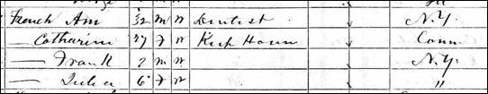
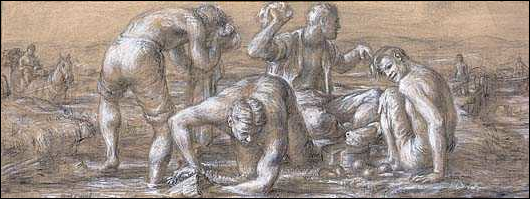
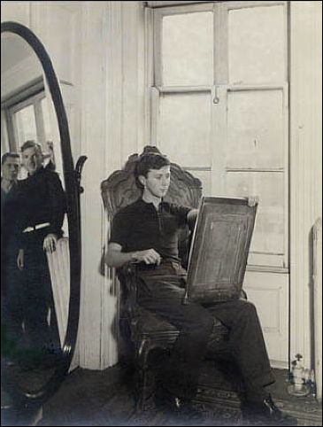
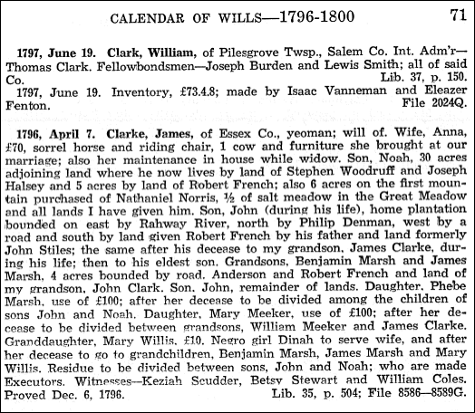

FFA
Home Page
Foreword
In Appreciation
History and Research
Frenchs Mustard Company
Frenchs
Mustard History
Chronology
of R. T. French Co.
Frenchs
Mustard History
Frenchs Mustard
Homepage
Wikipedia
Encyclopedia of Frenchs Mustard
Dining Delights 1948 Cookbook by Carol French
R. T. French Products
Frenchs Recipes
Ancestry of Robert T. French
Maps of the NY
and NJ Counties Where the Early Frenches Lived
Who Was Robert
Frenchs Father?
Chronology of
Robert French
No Male Heirs
Left In This Family
Chart
#183 (gedcom) Chart
Index
Note that this file is dated 2007 and has not been kept up to date, but
it includes other surnames related to this line such as Smoke, Jackson,
Manning, Sweazy, and Kelly. Corrections have not been
made to this file. For accuracy, see the following generations:
First Generation
Second
Generation
Third Generation
Fourth
Generation
Fifth Generation
Carol French
Cemetery
Records
DNA Testing
Surname
French in Bernards Twp, Somerset Co., NJ
Robert
French of FFA Chart 188
William
French and Cornelius French, FFA Chart 188
Bibliography
Foreword
Ive researched this line just about all I can from
ancestry.com and from the internet. Additions need to
come from family members or from local books or historians who havent put
their information online.
P.S. Although Robert T. French is not of my line, I will
continue to do research as time permits. My line is FFA Chart #6.
In Appreciation
The FFA wants to thank Jan Rieke
for her tremendous help on this line. She not only researched most of the data,
but also submitted various photos and scanned other hard-to-see xeroxed photos that are shown below.
The FFA would also like to thank Priscilla Cummings for her
untiring research of documents for this line. I met Priscilla in a very unusual
way. A lady friend of mine in Northern California is a relative of Priscilla.
My friend told me that she saw a small box at Priscillas house with the name
French on it, and lo and behold, Priscilla is on my own chart, Chart #6, but
she helped me out greatly with the Frenchs Mustard line out of sheer
enjoyment.
History and Research
Another chart, FFA Chart
#188 of New Jersey has descendants with the names Rapplyea,
Voorhees and Manning, but no Bond nor Van Pelt family. Chart #183 is also from
New Jersey, but so far there has been no tie between the two charts. The
earliest ancestor from this line is the grandfather of Frenchs Mustard
inventor Robert T. French. This earliest French was born 24 Apr 1766 in New
Brunswick, Middlesex Co., New Jersey. This line
ends with no male heirs.
Frenchs
Mustard History
In 1885 Rochester was a bustling community of 90,000 people
when Robert T. French moved his operations from the burned out plant in
Fairport to Browns Race adjacent to the Genesee River. The city at that time
was still a center of flour milling [6].
From Robert T. French's vision in 1880 of a family run spice
mill has come a nationwide enterprise of 2,500 employees in 1980, and a brand
name that is known and respected by tens of millions of Americans, starting
with a mustard seed. Robert Timothy French's trade was spices of all kinds. The
founder's eldest son, George Jackson French, with substantial help from his
brother Francis, provided the drive and vision that propelled the firm into the
forefront of America's flavor market [6].
The Rochester-made Selden truck in this photo was
occupied by the German-Americans in the photo, and was made by Rochester's only
automotive pioneer [6].
There was no way for Robert French to know that in the same
year, 1880, an obscure bank clerk named George Eastman started a photographic
business a scant block from R. T. French's later location in Rochester, NY.
Both Kodak and French's Mustard became household names. R. T. French did not
live to celebrate this success, but his sons did. Francis Jackson French was
barely a teenager when his elder brother, George, was taken into the firm. R.
T. French lived to see the company through a crucial initial period. It was
George who took the firm from tenuous survival status to the grounds of solid
success. George French was the only one of the brothers to go without a college
degree, although he took some classes. Robert and Edward (Ned) became
physicians; Francis majored in chemistry, a background which
proved useful as he grew into the spice business. George's higher education was
confined almost entirely to the School of Hard Knocks whose lack of
specialization proved to be an asset. Unlettered by an academic specialty, he
became something of a Renaissance Man in his business, equally adept at
busying, selling, production, housekeeping, and finance. Through voracious
reading, in later years he also became a man interested in the world at large
[6].
R.T. French Company Presidents
Robert T. French 1880-1893
George J. French 1893-1926
Francis French 1926-1942
Chronology of R. T. French Co.
1883. Three year old R. T. French Co., started by spice
trader Robert French and his brother George French, moves from New York City to
Fairport, NY. Brothers Robert and George French bought a flour
mill.
1884. The flour mill burned down;
they relocated the flour mill to Rochester, NY, and named their mill the R. T.
French Company.
1893. R. T. French dies and brothers George and Francis take
over the business [5].
1904. Frenchs Mustard discovered at the St. Louis Worlds
Fair the same year that the hot dog was introduced [5]. Created as a salad
dressing, it is paired with another new food, the hot dog, and becomes an
instant success [4].
1912. R. T. French Co. moves into city, and locates factory
at One Mustard Street, Rochester, NY [4].
1920. R. T. French Co. introduces power machinery and
becomes one of the largest food producers in the world [4].
1942 French's Bird Seed and Bird Biscuit ad shows it is also
owned by The R. T. French Company, 2471 Mustard Street, Rochester, NY [4].
The R.T. French Company is now owned by
Reckitt Benckiser PLC, a British Company, bought in 2005, New Jersey-based
Reckitt Benckiser Inc. They also have an office in Springfield, Missouri. One
reason the company was sold off was because there was no son or son-in-law to
pass the business to.
The company that produces French's mustard is now neither
owned by French interests nor headquartered in France, however. French's
corporate parent is actually a British firm, Reckitt Benckiser PLC; the popular
mustard brand is designated "French's" because it was originally a
product of the American firm R.T. French Company, named for its founder, Robert
T. French.
Maps of the NY and NJ Counties Where the Early Frenches Lived
Note that Somerset and Middlesex Counties in New Jersey
border each other. Cayuga, Chemung, and Tompkins Counties in New York are all
near one another.
Who Was Robert Frenchs Father?
Was Robert French from England?
There is no evidence that Robert was born in NJ.
Ancestry.com in their London, England, Baptisms, Marriages and Burials,
1538-1812 a record of a Robert French baptized 2 Nov 1766 in St. Marylebone,
Westminster (now Middlesex), London, the son of Stephen and Grace French. No
other children are listed from Stephen and Grace French between 1756-1776. The
name Stephen is not used in this lineage, plus there is no mention that this
Robert immigrated to America; therefore, we are considering this person not
part of this line unless we find more accurate documentation.
Was Robert Frenchs Father also named Robert French?
From Documents Relating to the Colonial Revolutionary, and
post-Revolutionary History of the State of New Jersey, Paterson, NJ: The Call
Printing and Publishing Co., 1904, vol. 7, pp. 31-33.
New-York, February 4 [1768]. By a
written Account from Richmond County on Staten-Island, and by a Gentleman who
brought it, and was himself a Sharer in the Calamity, we are acquainted with
the following Scene of Distress, viz.
Website: http://www.archive.org/stream/documentsrelatin26newjuoft/documentsrelatin26newjuoft_djvu.txt.
From a 1768 newspaper, we find Robert French arrived at
Philadelphia from St. Kitts, formally known as
Saint Christopher Island, in the West Indies. Many members of the Irish family
with the surname French immigrated to the West Indies. This article takes place in 1768 and Robert of this line was born in 1766;
perhaps both father and son immigrated at the same time. If not, who is this
Robert French? By 1776 St. Kitts had become the richest British colony in the
Caribbean, per capita.
Unknown Newspaper
New-York, February 4 [1768].
By a written Account from Richmond County on Staten-Island,
and by a Gentleman who brought it, and was himself a Sharer in the Calamity, we
are acquainted with the following Scene of Distress, viz.
On Thursday Night, the 28th January, between 7 and 8 o'Clock, the Weather extremely cold, and the Ground cover'd with Snow, the following Persons went from the
Blazing Star, in New-Jersey, to cross the Ferry to Staten-Island, (the Wind
being moderate and fair, and the Passage judged to be very safe) viz. Mr.
William Cornelius George, supposed to belong to Rhode-Island; and Col. Kalb, a
German Gentleman; both lately arrived at Philadelphia from London. Mr. Robert
French, lately
arrived at Philadelphia from St. Kitts. Mr. John Kidd, of Philadelphia,
Merchant. John Thomson, (who has a Wooden Legg) Stage Driver. William Bury, and
a Lad, belonging to the Ferry, (the Lad was lately Cabin Boy to a Ship from
London to New-York, where he left the Ship, alledging
that the Captain had misused him). A Negro Man, belonging to
Mr. Newry of the Jersies,
and a Negro Man, belonging to Mr. Provoost of this
City, in all 9 Persons, and 4 Horses. As they were crossing the Ferry in
a Scow, a violent Wind suddenly arose at N. W. whereby they were driven a
considerable Way down the River, and ashore on a Mud Bank, where the Scow was
half filled with Water; but as it was impracticable to land at that Place, they
were obliged to put off again, and in their Efforts to gain the Land broke two
of their Oars, and were soon driven ashore upon a small Marsh Island, in the
Mouth of the Fish-Kill Creek, about half a Mile distant from the Ferry-House,
where the Scow immediately fill'd, and the People and
Horses were obliged to get out. The Mud was so soft, that the Men sunk in it to
near the upper Part of the Thigh, and were not able to pull out their Feet,
without lying down on the Water and Mud, and assisting with their Hands; but
with great Difficulty they at last all got to the highest Part of the Marsh:
The poor lame man was rendered more helpless, by breaking his Wooden Leg. Three
Horses not being able to disengage themselves from the Mud,
stuck there and perished. The People on their small Portion of Marsh, deep cover'd with Snow, had not the least Shelter from the
freezing Blasts of the Wind, nor could they make themselves be heard by the
People on Shore, the Wind being against them. They had no other Resourse than to huddle as close together and give themselves as much Motion as possible. It was then about 9 o'Clock, the Boy soon gave out and sunk down, but the Men
took him up, shook him, and did all they could to exercise and heat him; but at
about Eleven he expired. At one o'Clock, Mr. George,
who had till then seem'd to bear up as well as any of
them, began to faulter, and not-withstanding the best
Assistance his Fellow-Sufferers could give him, he expired at about three o'Clock, the Rest lived out the dreadful Night, and at
last, almost quite spent and hopeless, at about nine o'Clock
in the Morning, were discover'd, and with proper
Help, for they had all nearly lost the Use of their Limbs, they were carried to
Mr. Mersereau's and all possible Care taken of them.
Col. Kalb, after taking off his Boots immediately put his Feet in cold Water,
where he held them near half an Hour, during which he took some Refreshment,
and then went to Bed and slept soundly till the Afternoon: And he was the only
Person that escaped without Hurt. The Rest sat up, round the Fire, and are
terribly frost bitten; it is fear'd they will all
lose their Toes, and that the Feet and Legs of some are in Danger; an Ear of
one of the Negroes seems entirely perish'd. Mr.
French, Mr. Kidd, John Thomson, Wm. Bury, and the two Negroes when this
Account came away, were at Mr. Mersereau's
Ferry-House, opposite to the Blazing Star, unable to travel. The two dead
Bodies were carried to the same Place for interment;
the Coroner's Inquest having first sat on them. Mr. George, (said to be a Man
of good Family and Fortune) was buried on Sunday last, with proper Solemnity.
His Effects are in the Hands of the Coroner, till claimed by his Friends. Col.
Kalb, proceeded on his Journey, and arrived here on Monday last. The Horses
belonged to Mr. Mersereau.**
New Blasing-Star
4th February,
1768.
To the IMPARTIAL PUBLIC.
WHEREAS it has been maliciously reported, that John Thomson,
Stage-Waggoner, was the sole Cause of the unhappy Misfortune which happened on
the 28th last, we who were at that Time in the Boat, and had come with Mr.
Thomson from Princeton, cannot refrain from clearing an innocent, suffering
Man, from that false Imputation under which he at present labours:
We do candidly own, that he proffered staying at Woodbridge, but we not
willingly consenting to that Proposal, set off; when we came to the Ferry, the
Night appeared very agreeable, and we all with one Consent got into the Boat,
when about the Middle of the River, a Storm came on, which drove us on a desert
Island, where we staid till next Morning, when Mr. Mersereau
came to our Assistance.
JOHN KIDD,
ROBERT FRENCH
* William L. Stone. History of New York
City from the Discovery to the Present Day. New York: Virtue & Yorston, 1872. Pages 184-187.
** William Nelson, ed. Extracts from American Newspapers,
Relating to New Jersey. Vol. VII, 1768-1769. "Documents
Relating to the Colonial History of the State Of New Jersey.".
Volume XXVI. Paterson, N. J.: The Call Printing And Publishing Co. 1904. Pages
31-33.
William Nelson, ed. Extracts from American
Newspapers, Relating to New Jersey. Vol. VII. 1768-1769. "Documents
Relating to the Colonial History of the State Of New Jersey." Volume XXVI.
Paterson, N. J.: The Call Printing And Publishing Co. 1904. Page 48.
Researching John Kidd, he was b. ca. 1768 and d. 1 Dec 1862
in VA, a contemporary to Robert French. John Kidd m. Sarah Robinson ca. 1791,
and as far as we can see, he is no relation to Robert French.
8 February 1768. Since our last we have learnt the
Names of the suffers on board the Blazing-Star Ferry-Boat, on Thursday the 28th
of last month, Viz. Col KALB, a German Gentleman; William Cornelius GEORGE, Robert FRENCH, John KIDD, William BURY,
John THOMSON, two Negroes, and a lad that went in the Boat, in all 9 Persons.
[Note that William Cornelius George came from Anatigua and spent the early part of his college course at
Yale.
In the same book as mentioned above is this obituary [20].
It takes place during the same year, 1768, only 6 months later. Sandy Hook is
in NJ, a barrier split approximately 6 miles in length, in Middletown Twp,
Monmouth Co., along the Atlantic Ocean. The Dutch called the area Sant Hoek, with the English
Hook deriving from the Dutch Hoek meaning split
of land. Sir
Henry Moore, 1st Baronet, was Colonial Governor of New York from
1765-1769. He was b. 1713 and d. 11 Sep 1769, only a year after this article
was written. Sir Henry m. Catherine Maria Long, member of another prominent
Jamaica family. Sir Henry was born in Jamaica and became Governor there. Henry
and Catherine had several children, and after Henrys death, Catherine moved to
England. Catherines Peak in Jamaica is named after her, as local legend
reports her to be the first woman to climb the peak. John French is not the
John French of FFA
Chart #131, as that John French of New York was b. after 1667.
PHILADELPHIA, July 28, 1768.
We hear from New-Jersey,
that last Week died at
Sandy-Hook, JOHN FRENCH, Esq;
late Secretary to his
Excellency Sir HENRY MOORE, Governor of New-York.
Other Background on John French to see if he connects with
Robert French, which does not seem likely:
From the History of Eastern
Vermont, Chapter V, First Settlements. The charter
of the township of Bradford was issued by Sir Henry Moore, Governor of New
York, on the 7th of November, 1766. John French and his associates were
named as the grantees in the patent. After the death of French, William Smith
and his associates applied for a grant of the township and received a new
charter on the 28th of March, 1770. At the same time
the name of the town was changed to Mooretown, as a compliment to the governor.
On the 23d of October, 1788, the name was again
altered to Bradford by an act of the Legislature of Vermont. [Robert was born 4
years before John died, so it is undocumented whether or not John was his
father].
From the Collections of the New York Historical Society For
the Year 1898: (the name Robert French is not mentioned)
Was Robert French Related to Philip and John French of NYC, FFA Chart #131?
Close ties are evident with the names Philip and John of FFA
Chart #131 and to Robert, Philip, and John of FFA Chart #183. They both
attended the Reformed Dutch Church of New Brunswick and lived in the same
generation. There are many descendants named Philip in both families. See Philip and John
French, FFA Chart #131. This chart ends in 1742 because no male heirs
exist.
Chronology of Robert French
Life in New Jersey
1740 – probably birth date of Robert Frenchs father
1766, 24 Apr -- Robert French born, probably in Middlesex
Co., NJ
1774, 8 Mar – Jane Rapplyea
born
1774, 1 May – Rachel Manning born in NJ, grew up in
Essex Co., NJ
1791? – Robert French m. Jane Rapplyea
1792, 15 May -- Robert and Jane's daughter born, Marg French, in NJ, married in Somerset Co., NJ, in 1813
1793 -- Robert and Jane's daughter born, Betsey French, in
NJ. She attended the Dutch Reformed Church in Millstone in 1804 on the border
of Somerset and Middlesex Counties, NJ.
1793 – Robert is listed in the Piscataway, Middlesex
Co., NJ, military Census
1793 -- June Tax List of Middlesex Co., NJ
1794 -- Robert and Jane's daughter born, Mary French,
married and moved to Hector, Tompkins Co., NY.
1794 -- Birth of Sarah Bond, first child born to Rachel
Manning Bond by her first husband, Isaac Bond.
1796 – Robert French lived in Essex Co., NJ, on land
given him by his father.
1797? -- Robert m. Rachel Manning Bond
1798 -- Robert and Rachel's first child born, John Manning
French, in NJ, grew up in Cayuga Co., NY
1802 -- Robert and Rachel's second child born, Philip French
in NJ, perhaps Bernards Twp., Essex Co., but lived in
NY in 1827.
1805 – Robert Jr. on the Bernards
Twp, Somerset Co., NJ Tax List
1815 -- Robert and Rachel's third child born, Harriet M.
French
Life in New York
1824, 24 Oct -- Robert French died in Genoa, Cayuga Co., NY,
age 58
1850 -- Rachel is living in Lansing, Tompkins Co., NY with
the Smoke family
1860 -- Rachel is living in Horseheads,
Chemung co., NY with the Sweezy family.
1862 -- Rachel d. and is buried at the Breesport
Baptist Cemetery in Horseheads, Chemung Co., NY.
No Male Heirs Left In This Family
From Ref. [2]:
|
Father
|
Son
|
Grandson
|
Great-Grandson
|
|
|
French, Philip
|
Edson M. French
|
Edson M French, Jr.
|
Died at age 24 in Rochester-Fell off Trolly
|
|
|
|
Horace Chapin French
|
Henry Redfield French
|
Jared Blandford French
|
Famous Artist-Had no Children
|
|
|
|
Sylvester Beard French
|
Elmira & Utica NY - Had no Children
|
|
|
|
John M. French
|
Arthur G. French
|
(Chicago Optician) Had no Children
|
|
|
|
Philip (Jr) French
|
Charles French
|
Elmira NY - Had no Children
|
|
|
|
|
William French
|
Claude B. French b. 1884 NY
|
Had one Daughter
|
|
|
Philip French
|
Died when young
|
|
|
|
|
Robert T. French
|
Edward Augustin French
|
Had no Children (Physician died in CA)
|
|
|
|
|
Francis Jackson French
|
Only Had 3 Daughters (French's Mustard)
|
|
|
|
|
George Jackson French
|
Only Had Daughter Julia (French's Mustard)
|
|
|
|
|
Robert T. French
|
Had no Children (Rochester Physician)
|
|
|
|
Rodney L. French
|
Died when young
|
|
|
|
|
William Edwin French
|
Died when young
|
|
|
|
French, John Manning
|
Frances French
|
Died when young
|
|
|
|
|
John M. French, Jr.
|
George S. French
|
Oregon State Insane Asylum-no heir
|
|
First Generation
1.1* Robert French, b. 24 Apr 1766 and lived in New
Brunswick, Middlesex Co., NJ, and d. 24 Oct 1824 in Genoa, Cayuga County, NY,
age 58 years and 6 months. He shows up in Piscataway, Middlesex Co., NJ on the
military census of 1793 and on the June Tax List of 1793, which gave his age as
27 at that time [3].
Robert was a native of New Jersey, a steady and
industrious man of good principles and followed the avocation of a carpenter.
In 1806 after his second marriage, the family moved to Cayuga County NY, where
he purchased a farm, on which he resided until his death. Buried in King Ferry
Cemetery, Genoa, Cayuga County NY. He was a Yeoman and
a Carpenter. His will dated 9/28/1824 was probated March 24, 1825, mentions his
wife Rachel and sons John M and Philip and daughters Betsey Van Narstrand, Polly Brocaw and
Harriet Brocaw. Executors were Caleb J. Brocaw and John M. French, and witnesses were Munson Brockitt, Elijah Drake and Bartlett H. Halsey. There was
also a record of Robert French in 1793 (aged 27), in the Piscataway, Middlesex
County, NJ citizen rolls and an Isaac Brocaw (aged
34).
First Marriage
Robert m1. Jane Rapplyea (Rapleyea) and had 3 daughters. Jane was b. 1774 in Bernards Township, Somerset Co., NJ. Jane either died or
remained in NJ and Robert remarried and moved to NY. Jane Rapplyeas
relatives may have been Jerome Rappleyea and Jane
Voorhees who married Dec 1, 1809 in Somerset
Co., NJ and lived there between 1795-1879. Janes father, Nathanial Rapleyea owned land in 1810 in Benton, Ontario County NY
(by Steuben County).
Nathanial Rapleyea owned
land in 1810 in Benton, Ontario County NY (By Steuben County).
Somerset Co.,
NJ, Marriages
Jerome Rappleyea & Jane Voorhees, 1 Dec 1809
Abraham VanVoorhees & Jane Rappleyea, 14 Jul 1803Ancestry.com shows the following
possible relations:
Maria Van D Veer Perlee born
26 Oct 1797, christened at the Harlingen
Dutch Reformed Church in Montgomery Twp., Somerset, NJ, the daughter of
Peter Perlee and Rachel Manning.
At least 12 members of the Rappleye
family were members of the Harlingen Dutch Reformed Church. Jane A. Rappleye was a member, but this Jane was not born until
1829.
The Rapalje (Rappleye) family lived in France before they moved to
Holland. There they acquired the Dutch spelling of their surname and in 1624
immigrated to New Amsterdam [19].
Immigrant: Rapalje , Joris Jansen
Name of
Ship: Unity
Arrival Date: About 1625
Origin of Immigrant: Valenciennes, France Immigrant's Date & Place of Birth:
1572, Leyden, Holland
Immigrant's Date & Place of Death: 21 FEB
1663, Brooklyn NY Immigrant's Spouse: Catalyntie
Trico
Source of Information: Register of the Early Settlers of Kings Cty, NY, also family records [18].
Notes: Joris is said to
have been a clothworker in France, possibly later a
sailor. He was one of the 'Twelve Men' - influential Dutchmen who were advisors
to Governor Klieft. He was a deacon of the Dutch
Reformed Church, owned land in what is now Brooklyn, and was the ancestor of
all (so far as is known) of those who bear variants of the Rapalje
name (Rappleye, Rappleyea, Rapalier, Rapalye, etc.) [18].
Second Marriage
Robert m2. Rachel or Rachael
Manning Bond (widow of Isaac Bond), ca. 1797. Rachel was first married
to Isaac Bond, by whom she had a daughter, Sarah Bond, born 9 Jul 1794 in NJ
who m. Jonathan Smoke, and had 4 children: Eveline,
Sarah, David D., and Harriet. Rachel m2. Robert French. Rachel died in the home
of her daughter, Harriet Swazy, in Horsehead, Chemung Co., NY. Jonathan Smoke was b. 1806 in
NJ. For details, see http://wc.rootsweb.ancestry.com/cgi-bin/igm.cgi?op=GET&db=mtf183&id=I61.
Rachel Manning was born 8 Mar 1774 or 1 May 1774 in
Bernard Twp, Somerset Co., NJ, daughter of John Manning and Sarah Van Pelt.
Rachel d. 4 Aug 1862 at 88 ½ years old (88 years, 5 months, 3 days) and
is buried at the Breesport Baptist Cemetery in Horseheads, Chemung Co., NY. She grew up in Essex Co., NJ.
Rachel and her sister Sarah were the only surviving children at the time of
their mother's death.
Rachel was always a Baptist even though her husbands
first wifes family (Jane Rapplyea) were from the Dutch Reform Church.
The Bond Family
Isaac Bond and Rachel Manning Bonds daughter, Sarah
Bond, married Jonathan Smoke. Rachel remained in close contact with her
daughter from her first marriage after her second marriage to Robert French.
Rachel French is listed in the 1850 census
of Lansing, Tompkins Co., NY living with the her daughter, Sarah Smoke, b. 1794
in NJ, Sarahs husband Jonathan Smoke, and their 4 children.
By the 1860
census of Horseheads, Chemung, NY, Rachel moved from the Smoke residence to the Sweezy residence, and her daughter Harriets husband and
their family.
The Manning Family
Rachels father, John Manning, b. 1734, mentions in his will in Bernards
Town, Somerset Co., his daughter, Rachel French, to have her part put to
interest and paid her yearly until her 2 sons, John French and Philip French,
come of age, when they are to receive out of their mother's dowry, each $250.
Should daughter, Rachel French, become a widow, before sons come of age then
her dowry to be paid her: or if a reformation takes place in her husband, Robard French, and said sons die, the said dowry to be paid
them. Executors-Samuel F. Randolph and Elijah Smith. Witnesses-Benjamin
Jennings, John Peniton, William Compton. Proved July
17, 1804. Unrecorded. It is not known if Robard was a
derivative for Robert. See: http://www.rootsweb.com/~wvmarsha/jmanning.txt.
John MANNING was born in Piscataway, Middlesex Co.,
New Jersey, and died 18 Jul 1804 in Bernards Twp.,
Somerset Co., New Jersey. He married Sarah VAN PELT ca. 1737. Children of John Manning
and Sarah Van Pelt were:
1. Rachel Manning who m.
Robert French.
2. Sarah Manning who m.
Daniel Cooper. The John and Sarah Manning family Bible (page included with the
Revolutionary War pension files for John Manning) shows the birth of Sarah Bond
on 9 July 1794. See records found at Footnote.com. Digital copy of Bible
page also in the records of Lana Archibald, lana_a2000@yahoo.com.
Website: http://wc.rootsweb.com/cgi-bin/igm.cgi?op=GET&db=mtf183&id=I60
3. Margaret Manning, b. ca. 1770, d. in Genoa, Cayuga
Co., NY, m. John H. Kelly
John Mannings will:
Wife (unnamed), $300, best bed, round table, 4
chairs, looping glass, brass hand irons and tongs and other articles, one cow
and bay mare, room and other privileges of house; also my 3 daughters to pay
her $8 yearly, while my widow. Grandson, James Manning
Kelley, $250, when of age; also my brown colt. Granddaughter, Sarah Bond, $100 with interest, when of age.
My share of land in the Muskingum [O.] to be sold, likewise my land in
Vermont State, my saw mill and lot joining Benjamin Alward
on east side of road; also my home place of 150 acres and moveable estate,
all to be sold. Remainder of estate to be divided amongst
my 3 daughters and their children. Daughter, Margaret Kelley, $100,
and my granddaughters (John Kelley's children), i.e., Sarah Kelley, Elizabeth
Kelley, Mary Kelley and Rachel Kelley, each $60 out of their mother's dowry,
when of age. Daughter, Rachel French, to have her part put to interest and
paid her yearly until her 2 sons, John French and Philip French, come of age,
when they are to receive out of their mother's dowry, each $250. Should
daughter, Rachel French, become a widow, before sons come of age then her
dowry to be paid her: or if a reformation takes place in her husband, Robard French, and said sons die, the said dowry to be
paid them. Daughter, Sarah Cooper, her 3rd part. Granddaughter, Agnes Cooper (daughter of Daniel Cooper), $25,
before division takes place. Executors-Samuel F. Randolph and Elijah
Smith. Witnesses-Benjamin Jennings, John Peniton,
William Compton. Proved July 17, 1804. Unrecorded."
The Dutch Reformed Church of Millstone, Somerset County, New Jersey

See Historic
Dutch Reformed Churches of Millstone, Somerset County, NJ, plus more, and yet more,
and yet more.
The Brokaw family who married into the French family were
definitely Dutch. See the Descendants
of Jan Van Cleef.
The first religious organization of Millstone was
organized by the Presbyterians who erected a house of worship in 1760; this was shared by the Dutch. Difficulties arose and on August 11, 1766, the Dutch
organized a congregation under the name of New Millstone. The
land for the church was given by John Van Doren.
John Smock (a family who married into the French family) owned the land where
the church now stands, and he exchanged his lot for that given by Van Doren, so that the first deed of the church property is
from John Smock for 8 ½ tenth of an acre valued at ten pounds. The
first church was completed in 1768. During the Revolution, it was greatly
damaged by troops. The new church was laid out in 1828 and is shown above.
See Historic
Map Works, or PDF
version. Also see http://en.wikipedia.org/wiki/Dutch_Reformed.
Census Records
No Robert French is listed in the 1800 census of NJ
or NY.
Robert lived in Genoa, Cayuga Co., NY in the 1820
census. He died in 1825.
Rachel French is listed in the 1850 census of
Lansing, Tompkins Co., NY living with the Smoke family; she is the only
French.
Rachel French is listed in the 1860 census of Horseheads, Chemung Co., NY, at age 86, living with the Sweezy family (her daughter Harriets husband and their
family); she is the only French. Harriet French married Joseph Sweezy. Harriet Sweezy was the
youngest daughter of Rachel and Robert French.
The 1855 NY State
Census, Town of Horseheads, Chemung Co., NY.
The only French in this census is on Page 26,
Rachel French, age 80, the mother to the head of household Swayzee family, having lived 3 years at this log
house residence.
Death Records
Robert Frenchs gravestone at West Genoa Cemetery, Kings
Ferry, Cayuga Co., NY, fallen to its side. Robert died a Veteran, on 24 Oct
1824 at 58 years old and 6 months and was buried in King Ferry Cemetery, Genoa, Cayuga County NY. He was a yeoman and a carpenter. His
will dated 28 Sep 1824 was probated 24 Mar 1825, mentions his wife Rachel and
sons John M. and Philip, and daughters Betsey Van Narstrand
or Van Nostrand, Polly Brocaw
and Harriet Brocaw. Executors were Caleb J. Brocaw (Roberts son-in-law) and John M. French, and
witnesses were Munson Brockitt, Elijah Drake and
Bartlett H. Halsey. There was also a record of Robert French in 1793 (aged
27), in the Piscataway, Middlesex County, NJ citizen rolls and an Isaac Brocaw (aged 34).
From Ref. [2]: I'm attaching a picture of Robert's King
Ferry gravestone and another of his son-in-law's, Caleb J. Brokaw, which is
in very close proximity to Robert's. And a third which
shows both stones. Unfortunatly, Robert's stone is
knocked to it's side. I've been to the Breesport Baptist Cemetery in Horseheads,
but was unable to locate her stone, but many of the flat stones are illegible
or partially buried under the grass.
The Lane Family
From the Colonial History of the State of New Jersey by
Elmer T. Hutchinson, showing calendar of wills, 1796-1800, proves Robert
French of Somerset Co., NJ, was the Fellowbondsman for Abraham Lane on 4 Apr 1799. It
mentions Joseph Manning – Manning was a surname connected with his
French family. From this entry we can only determine that Robert was at least
18 years of age in 1799; therefore, born in 1781 or before, and this we
already knew as he was born in 1766 and was 33 years old at the time of his fellowbondsman.
Looking at ancestry.com for Abraham Lane, we find he fits
right in with this family. He was b. ca. 1781 in Marlborough, Monmouth Co.,
NJ, the son of Abraham Lane and Hannah Horne. Here is the ancestry of this
family:
Adriaen Lane, 1672-1738,
m. Martyntje Smack
Abraham Lane, 1709-1761, m. Johanna Brouwer, of
Raritan Landing, Somerset Co., NJ
Abraham Lane, 1749-?, m. Hannah Horne, of Freehold,
Monmouth Co., NJ
Abraham Lane, 1781-?, of Marlborough, Monmouth Co., NJ. He was baptized at the
Dutch Reformed Church of Freehold and Middletown, Monmouth Co., NJ, which is
the church that Robert French and his wife belonged to.
Abraham Lane, b. 1795 in NJ. By the 1870 census, he was living in Ocean,
Monmouth Co., NJ with his wife, Ann Lane, and with several children and
grandchildren.
FFA
Chart #188 also lists a Hannah Horn married to Joseph French, b. between
1714 and 1721 of Raritan Landing, Middlesex Co., NJ.
Second Generation
Child of Robert and Jane (Rapleyea)
French, 1.1
2.1 Marg French,
b. 15 May 1792 and was of the Dutch Reform Church, d. 14 Mar 1863 in Hector, Schyler County, NJ. She married Caleb J. Brokaw of
Millstone, Somerset Co., NJ, on 25 Sep 1813 in Raritan,
Somerset Co., NJ. In 1824 the Caleb family moved to Cayuga County, NY. Caleb Brocaw or Brokaw was b. 12 Oct 1792 in Millstone,
Somerset Co., NJ, and d. 1 Sep 1834.
Children of Marg French
and Caleb Brokaw (a Dutchman) are: John Brokaw, b. 1813; Ann Eliza Brokaw, b.
2 Jul 1815; Isaac Brokaw, b. 7 Sep 1817; Jane Rapplyea
Brokaw, b. 23 Jul 1819; Lambert Brokaw, b. 28 May 1822; Philip French Brokaw,
b. 1825; and Robert M. Brokaw, b. 24 Feb 1827, and maybe a Sarah Esther Brocaw b. 1828.
Caleb I. Brokaw, buried at the King
Ferry Cemetery, Genoa, Cayuga County NY
2.2 Betsey (Elizabeth) French, b. ca. 1793; m.
Christopher Van Narstrand.
A Bridgewater Twp, (Somerset County) will of
Christopher Van Norstrand (must have been his
father), dated May 10, 1804 names nephew Gilbert A. Lane, and Jacob Van Norstrand, son of my brother Jacob. Gilbert Lane was b.
12 Oct 1790 in Branchburg, NJ, the son of Cornelius Gilbert Lane and Judith
Van Fleet, d. 24 Nov 1866 in Branchburg, Somerset Co., NJ at 76 years of age.
Gilbert Lane was connected to the Teneyck (or Ten Eick) family.
Betsey was of the Dutch Reform
Church in Millstone, on the border of Somerset and Middlesex Counties.
Christopher was b. 1790, d. 1841. They had children: Jane b. 9-30-1815 married Andrew Ten Eick b. 7-4-1813 Somerset NJ. It appears son John Ten Eick, b.1840, died Civil War 7-9-1864. Did the same fate
happen to John's brother Matthew b.1838? Cornelius b.1843 wed Mary Eleanor Vroom
in 1867. What became of another brother Andrew, b.1849? Did they have yet
another brother named Rodney? Jane Van Norstrand
had siblings; John C. b. 1810, wife Mary Ann Brown; Mary Ann b. 1813 wed John
D. Van Doren; Elizabeth b. 1818 no further info. Jacob
Van Norstrand married Cornelia Cox. The Ten Eyck
family also appears in FFA Chart #
2.3 Mary (Polly) French, b. ca. 1794; m. a Brocaw. Mary lived in Hector, Tompkins Co., (became Schyler Co.), NY. She d. in Rochester, Monroe Co., NY. They had daughter
Sarah Esther Brokaw, b. 22 Oct 1829 in Genoa, Cayuga Co., NY.
Children of Robert and Rachel Manning (Bond) French, 1.1
2.4* John Manning French, b. 11 Jul 1798, New
Brunswick, NJ. He m. Sarah Herrington in 1823 in Canandaigua, New York. Sarah
was b. near Albany, NY and was from Canandaigua, NY. They moved with their
children to Michigan in 1839.
John M. French was one of the first settlers of
Lansing, Michigan in the township of Aurelius. He was born in NJ, grew up in
Cayuga County NY, and left home at 18 to acquire a trade. He apprenticed
himself to a tanner and currier, and completed his indentures about the time
he was 21 years of age. He then worked as a journeyman in various towns, and
in 1820 entered the employ of Mr. Tillman. The following year they formed a
co-partnership and commenced business in Canandaigua, NY. From Canandaigua he
went to Seneca Falls, NY, where having dissolved partnership with Mr.
Tillman, he took charge of his business. After several changes of location he
went to Ludlowville, Tompkins County, NY, where he
made the acquaintance of Joseph L. Huntington, and between the two a warm
friendship sprang up, which continued unbroken for over forty years. In 1838
the two resolved to come west. Mr. French had disposed of his property for
lands in the towns of Aurelius and Onondaga, Michigan. They arrived in April
1838, and Mr. French immediately commenced to prepare for the coming of his
family, whom he had left behind. He built a log house, cleared and sowed
thirty acres of wheat, and in the autumn of that year returned for his
family. The following spring he made a permanent settlement. He resided in
Aurelius until his removal to Lansing in 1866 where he resided until his
death. He was prominently identified with the development of Aurelius. He
served the town as its supervisor and in 1842 was elected to the
representative branch of the Legislature. He acquired a competency and
perfected a valuable record as a citizen. Although he always shrunk from
prominence and led a quiet home-life, still, throughout the length and
breadth of Ingham County, Michigan, he is known as one of its founders, and
his name is associated with the best men that the county has produced.
Photo Reference
Another record
says that John M. French was born in Essex Co., NJ in 1798, settled on
section 31 in the township of Aurelius, April 29, 1838. During the first ten
years of their residence in the county, Mr. and Mrs. French lost three of
their children. He was the town supervisor of Aurelius and a representative
of the Legislature. He was also a pioneer of Lansing, Ingham Co., MI.
Another
record says that John M. French was a representative from Ingham Co., in
1842, was born in New Brunswick, NJ on 11 Jul 1798, and removed to western
New York in 1806, there learned the trade of a tanner, and was in that
business in several places. He settled in Aurelius, MI, as a farmer in 1838,
and held several offices, including that of supervisor. He resided in
Lansing, MI, since 1866. At the legislative reunion in 1886, he was the
oldest person present. In politics, he was a Democrat.
Sarah Herrington was born near Albany NY and from
Canandaigua, NY. They married in New York in 1823 and then the entire family
moved to Michigan in 1839.
"History of Ingham and Eaton
Counties Michigan, with Illustrations and Biographical Sketches of Their
Prominent Men and Pioneers", by Samuel W. Durant. From Ingham County Biographical Sketches, http://www.usgennet.org/usa/mi/county/ingham/Bio/FrenchBio.html
.
Published by D. W. Ensign
& Co., 1880.
Page 224 – 225
The venerable pioneer,
whose name and history are so intimately connected with the city of Lansing
and the township of Aurelius, where he was one of the first settlers, was
born in New Brunswick, N. J., July, 11, 1798. His
father, Robert French, was a native of New Jersey, and followed the avocation
of a carpenter. He was a steady, industrious man, of good principles. He
married Mrs. Rachel Bend, and reared a family of three children, John M.
being the oldest. In 1806 the family removed to Cayuga Co., N. Y., where the
elder French purchased a farm, on which he resided until his death. He
apprenticed himself to a tanner and currier, and completed indentures about
the time he was twenty-one years of age. He then worked as a journeyman in
various towns, and in 1820 entered the employ of one Tillman. The following
year they formed a copartnership and commenced
business in Canandaigua. From Danandiagua he went
Seneca Falls, where, having dissolved partnership with Mr. Tillman, he took
charge of his business. After several changes of location he went to Ludlowville, Tompkins Co., N. Y., where he made the
acquaintance of Joseph L. Huntington, and between the two a warm friendship
sprang up, which continued unbroken for over forty years. In 1838 the two
resolved to come West. Mr. French had disposed of
his property for lands in the towns of Aurelius and Onondaga. They arrived in
April, 1838, and Mr. French immediately commenced to
prepare for thecoming of his family, which he had
left behind. He built a log house, clearned and
sowed thirty acres to wheat, and in the autumn of that year returned for his
family. The following spring he made a permanent settlement. He resided in
Aurelius until his removal to Lansing in 1866, where he has since resided.
Mr. French has been prominently identified with Aurelius and its development.
He served the town as its supervisor for a number of terms, and also
officiated in varous minor positions. In 1842 he
was elected to the representative branch of the Legislature. In 1823, Mr.
French married Miss Sarah Herrington, of Canandaigua, N. Y. She was born in
1804, near Albany, N. Y., and came to Michigan in 1839. She has shared with
her husband the privations of early days, and has been his faithful friend
and companion for over fifty-seven years. The life of Mr. French has been
comparatively uneventful. His early days were full of trials and toil, but
his life has been a success. He has acquired a competency and perfected a
valuable record as a citizen. Although he has always shrunk from prominence
and had led a quiet home-life, still, throughout the length and breadth of
Ingham County, he is known as one of its founders, and his name is associated
with the best men that they country has produced.
John died 28 Oct 1889 in
Lansing, Ingham, MI at age 91. He was a farmer and widowed before he died,
the son of Robert and Rachael French. He was born ca. 1798 in NJ and in the 1860 census, he is 62 and living in
Onondaga, Ingham Co., MI, with his wife Sara and children John M. French, age
30, and Esther A. French, age 26. In the 1850
census of Aurelius, Ingham Co., MI, he was 52 years old and living with
his wife, Sarah, age 46, and son John M. French, age 19.
2.5* Philip French,
b. 1802 in perhaps Bernards Twp, Somerset Co., NJ;
d. 1881 in Washington Heights, IL. He m1. Julia Caroline Walker before 1827
in New York. The 1900 census of Philips son, John M. French, states
that his mother, Julia Walker, was born in 1805 in Connecticut. Philip m2. Amanda Barber between 1868-1870 in Elmira NY or Chicago IL.
When Phillip and Julia moved from Ludlowville,
Tompkins Co., NY, to Elmira, Chemung County, NY, Phillip's mother Rachel
French moved from Ludlowville to Southport,
sometimes staying with Swazees and sometimes with
Smokes, all New Jersey people.
The following information
is from Joyce Tices website: http://www.joycetice.com/families/barber.htm
Phillip was a wealthy Chicago businessman who
made his money selling furniture. The 1870 census listed him as a 66 year old spring board manufacturer, born in New York.
It lists his wife Amanda as 26 years old and also born in New York. Family
notes report that he was a very wealthy man who lost most all of his fortune
during the Chicago Fire the second week of October 1871. He and Amanda lived
in Washington Heights, Calumet Township, Chicago.
Washington Heights was a German community between 95th Street and 103rd
Street, now considered South Chicago. It emerged between 1860-1873 as an
elaborate suburban development engineered by the Blue Island Land and
Building Company. The census also shows a nine-year old girl named Lizzie
Goodrich lived with them, very possibly Amanda's niece (as her sister Harriet
married John Goodrich). Lizzie was also born in New York. Amanda was listed
as a widow with a seven-year old daughter (H.E. French) in the 1880 census.
Phillip and his first wife (and 8 children) lived
in Ludlowville (Tompkins County) NY from 1834 to
ca. 1856 according to Deed Records and his mother Rachel is listed there in
both 1854 and 1859. The town directory of Elmira, Chemung Co., NY, lists his
name in 1857. His son Robert was born in Ithaca, Tompkins Co., NY in 1828.
Tompkins Co. NY changed to Chemung Co in 1851.
The book "History of Early Chicago - Modern
Chicago and its Settlements" by Albert D. Hager (p. 628), lists Philip
French as one of the Washington Heights Justices (1874-1881).
The 1850 Lansing, Thompkins,
NY Census shows Philip (48 b. NJ), Julia C. (45 B. Con), Philip, jr. (15 b. Thompkins), Edson (13 b. Thompkins), Julia
C. (11 b. Thompkins), Horace C. (9 b. Thompkins), John (6 b. Thompkins),
Hannah Walker (60 b. Con), and Margaret ??und (19, b. Thompkins). In 1855,
son Philip is listed as 20, but there is also a boarder named Philip French,
aged 21 b. Tompkins living with them).
Amanda Barbers parents were born in
Pennsylvania, and must have then moved to New York, where Amanda was born.
Amanda moved to Illinois in 1870. Her husband Philip was 40+ years older than
her. She survived her husband for only a couple of years caring for her young
daughter alone. Amanda had cancer of the arteries for two years and after ten
days of complications (blood abcess) she died.
Amanda was buried at Mt. Greenwood cemetery, 111th St. & California,
South Chicago, in an unmarked grave. Her orphaned daughter, Evangeline
Harriet went to live at a Catholic Convent, the Institute of Our Lady in
Chicago, for ten years until she turned 18.
The 1868
Elmira NY Directory lists Philip French living with his son E. M. French,
Dentist, and also the following Barbers:
Miss Mary Barber & Amanda Barber, dress
makers, Water cor College Avenue
The following Barbers are unrelated to this
family:
E. L. Barber & James
M. Barber, masons, 38 Market
Benj.
Barber jr. traveling agent, boards at 17 William
Abbott Barber, mason, 233 Church
Family records show that Amanda came from a large
family. Some of her sisters were Harriet (married John Goodrich), Ella
(married Chas Brownell) and Elizabeth (married Jim Brownell).
Philip is in the 1850 census of Lansing, Tompkins Co., NY, living with his wife
Julia C., and their children Edson M. French, 21,
and John M. French, 17.
Philip is in the 1860 census of Elmira, Chemung Co., NY. Julia died in Elmira in
1867.
Family records show that Amanda came from a large
family. Some of her sisters were Harriet (married John Goodrich), Ella
(married Chas Brownell) and Elizabeth (married Jim Brownell).
2.6 Harriet
M. French, b. 30 Mar 1815 in NJ, m. a Brocaw. She went to Michigan in
1850 and lived next to John M. French, her brother, but they moved back to NY
by 1860, to Horseheads, Chemung Co., NY, instead of
Tompkins Co. Rachel, her mother, joined them when they returned. Harriet m. Joseph Sweazy or Sweezey who was b. 1812. They had 3 children,
Alvin Sweezey b. 1841; Mary Sweezey
b. 1844; Eliza A. Sweezey, b. 1846. Another record
says they had a fourth child, Byron O. Sweezey, b.
Feb 1840 in Tompkins Co., NY. Harriet d. 15 Nov 1892 in
Tioga Co., PA [7].
Children
of John M. and Sarah (Herrington) French, 2.4
3.1 Frances
French, b. 12 Feb 1820, Genoa, Cayuga Co., NY; d. 12 Feb 1830 (age 10),
Genoa, Cayuga County, NY. Frances was buried in Kings Ferry Cemetery
(Genoa NY).
3.2 Ellen French, d. 27 Jul 1829, Genoa,
Cayuga Co., NY. Ellen was buried in Kings Ferry Cemetery
(Genoa NY) next to Caleb L. Brokaw who d. 9/1/1834, aged 41 years, 10 months
and 20 days. Ellen's gravestone reads Ellen, daughter of John M. and Sarah
French.
3.3* John M. French,
Jr., b. 1831, Genoa, Cayuga County, NY; d. ca. 1880, Lansing, Michigan. He married Esther S. or
Esther A. who was b. in 1834 in MI. They had 2 children: Carrie M. and George
S. In the 1850 census of Aurelius, Ingham Co., MI, John is 19 and with
his parents. In the 1860 census of Onondaga, Ingham Co., MI, John is
62 and living with his parents. In the Michigan 1870 census John Jr.
is listed with his family in Lansing Ward 2, Ingham, page 121, as a 39-year
old lawyer, born in New York. He was a representative member of the Michigan
bar at the time of his death, about 1880. In the 1880 census of
Lansing, Ingham Co., MI, Esther is widowed and living with her children
Carrie M. and George S. In the 1900 census of Moscow, Latah Co., ID,
she is living with her son-in-law, Hiram T. French, age 38, who is not of
this line even though he has the surname French; also living with them is
Hirams son, Ralph W. French, age 9. Ralphs mother, Carrie, had died the
year before on 28 Apr 1899 in Moscow, Idaho.
Children of Philip and
Julia (Walker) French or was it the other wife, 2.5
3.4 Rodney L. French, b. March 20, 1827;
d. 23 Dec 1846, at age 19 years, 9 months, and 3 days, and is buried at the Ludlowville Pine Grove Cemetery in Ludlowville,
Tompkins Co., NY. Dewitt Historical Society of Tompkins County New York,
Ithaca area, could only find a record of Rodney L. French, son of Philip and
Julia C. French who died Dec. 23, 1846, aged 19 yrs, 9 mos., 3 days. He was
buried at Ludlowville Cemetery, Town of Dryden,
about 7 miles north of Ithaca.
3.5 Robert Timothy
French, b. 15 Nov 1828, Ithaca or Ludlowville,
Tompkins County, NY; d. June 17, 1893, Rochester, Monroe Co, NY, buried at
the Hope Cemetery in Rochester, NY. He was the progenitor of the Frenchs Mustard
Company. He married FRANCES JACKSON ca. 1850. She was b. in 1833.
The first photo below is
from the Central Library of Rochester and Monroe County, Historic Monographs
Collection, Notable Men of Rochester, page 87. The second photo is from Ref.
[6].
Robert Timothy French
began his career as a New York spice merchant in 1876. He ultimately started
the R.T. French Spice Company of New York City. Robert went to work for S. M.
Beard's Company, tea, coffee, and spice merchants, where he remained some 20
years. Besides George, the family grew with Robert, Edward, and Francis. The
dreams of Robert Sr. for his gifted sons were beyond the modest scope of a
mercantile clerk. It was in 1880 that the birth of a New York City enterprise
started with the name of R. T. French & Son, because Robert's first born
was taken into the firm. A few months later, the name was changed to French,
Jackson, & French. Jackson was an in-law into whose quarters on Warren
Street in Brooklyn the business was moved. His
son George French's Mustard at the 1904 St. Louis World's Fair when hot dogs
were invented at the same time.
Born in or near Ithaca,
New York, he appears to have worked in his native territory for many years
and then resettled in New York City to work for S. M. Beard's Company who
were tea, coffee and spice merchants. He remained there for about 20 years.
In 1876 he started a brokerage of his own, and in 1880 the company R. T.
French & Sons was born, because Robert's first born, George, was taken
into the firm. Just a few months later, the name was changed to French, Jackson
& French. Jackson, an in-law, had quarters on Warren Street in Brooklyn,
NY before moving to Rochester, NY.
Moved to Elmira, NY, ca.
1850. Most of Roberts adult life was spent working as a salesman for a New
York City wholesaler of coffee, tea, and spices. The Ithaca, NY, native did
not get around to forming his own business until 1880. A short time later, he was joined by his sons George and Francis, and in 1883
the firm was moved to Rochester, NY, where it produced spices and other
products including bird seed. It was Frenchs son George who introduced the
familys famous mustard in 1904. Prior to that time, American mustards were
typically of the hotter-than-fire variety, but the French brothers believed
that there was an untapped market for a lighter creamy condiment. As things
turned out, their assumption proved to be an accurate one; Frenchs Cream
Salad Mustard was a success from the start. In 1912 the company built a new
Rochester plant to keep up with the demand for its product. Ten years later,
a second factory was erected, and national advertising was begun. When the
R.T. French Company celebrated its centennial in 1980, the firm was selling
500,000 jars of mustard a day.
This sign stands today
where the R. T. French Co. began milling spices in 1883. A fire in 1885
destroyed the plant causing it to move to Rochester. The sign stands at the
corner of N. Main St. and Railroad St. in Fairport, NY. See website.
President
of the R.T. French Spice Co., in Rochester, NY. In 1857 he owned the
company with his father and it was called French & Co., grocers, 6 Lake
St. in Elmira, NY. (from the 1857 Elmira Directory).
In Rochester, NY, in 1892 (just a year before Robert T. died), he is listed
in the directory under the company name French, Palmer, & French. (R.T.
French, J.G. Palmer, and George J. French, the latter being his son.) They
were baking powder, coffee, and spice manufacturers. They also sold Browns
race ft. Furnace, building at 213 Alexander,
Rochester, NY.
Roberts parents-in-law,
Hiram W. and Lucy Jackson, where living with him in NY in 1880.
Robert T. French died a
married man. His death certificate from Monroe Co., NY states his father as
being Philip French and does not give his mothers name. He died in Ward 12
of the hospital at 213 Alexander St., Rochester, Monroe Co., NY, where he had
been a resident for 10 years. The death certificate is signed by a Robert T.
French Jr., M.D., heart failure, Septicaumia,
Rheumatism, Endocaiditis.
He is buried at _______ (illegible) in the family plot 20/193 (almost
illegible).
Robert T. FRENCH, president of
the R. T. FRENCH Company, of this city, died a few minutes after 7 o'clock
last Saturday evening.
Mr. FRENCH was taken ill early
in April with what appeared to be grip. The disease developed serious
complications, which resisted the best medical skill and careful nursing.
Robert T. FRENCH was born
November 15, 1828, in Tompkins County, N. Y. He removed in early life to New
York, where he engaged in business, being connected for several years with
the wholesale Beard's Sons & Company. Mr. FRENCH coming a member of the
firm of S. M. Beards's Sons & Company. Mr.
FRENCH came to Rochester with his family in 1883, and at the time of his death
was president of the company which bears his name.
For many years Mr. FRENCH was senior elder in the Ross Street Presbyterian
Church, Brooklyn, and for fifteen years was superintendent of the Sunday-school of this church. At the time of his death he
was a member of the Central Presbyterian Church in this city. He was also a
member of Genesee Falls lodge, No. 507, F. and A. M., a 32-degree Mason and a
life member of New York Consistory, Scottish rite, of the Northern
jurisdiction.
Mr. FRENCH was married to
Frances JACKSON, daughter of the late Hon. H. W. JACKSON of Havana, N. Y.,
January 25, 1854. She survives him, together with four sons, George J. FRENCH; Dr. R. T. FRENCH, Francis J. FRENCH and Edward A.
FRENCH, all of this city. Two brothers, Horace C. and John M. FRENCH, of
Elmira, also survive him. The funeral will take place at 10 o'clock to-morrow
morning from the family residence, No. 213 Alexander street.
The services will be conducted by Rev. H. H. STEBBINS, D.
D., and Rev. W. D'Orville DOTY, rector of Christ
Church.
Information
about Robert can be found in the book Entrepreneurs Review, by Joseph J. Fucini.
3.6 Philip French,
Jr., b. 1832 in Ludlowville, Tompkins Co., NY,
d. 19 Oct 1832 in Ludlowville at age 6 months and
20 days. He is buried at the Ludlowville Pine Grove
Cemetery.
3.7* Philip
French, Jr., b. 1835 in Ludlowville, Tompkins
Co., NY.
He was listed as a tinner or tinsmith who lived at
38 Orchard Road in the 1868 Elmira NY General Directory. He
m. Aonela Rider and d. 1886. He is listed in
the 1850 census of Lansing, Tompkins Co., NY, living with his parents
and siblings.
Ludlowville,
Tompkins Co., NY
3.8 William Edwin
French, b. 1836, d. 23 Feb 1837 at age 5 months and 15 days in Ludlowville, Tompkins Co., NY, and is buried at the Ludlowville Pine Grove Cemetery.
3.9* Edson M. French, b. 27 May 1838 in Ludlowville, Tompkins Co., NY. He m1. Catherine A. Hotchkiss probably ca. 1865 when he was discharged
from the military. She was b. ca. 1843 in CT according to the 1870
census of Chicago, IL, most likely in Seymour, New Haven Co., CT, where
her other relatives lived with the surnames Wheeler and Hotchkiss. Edson is also listed in the 1870 census of
Chicago, Cooks Co., IL, living with his first wife as A. M. French (vs. E. M.
French), dentist, and has children listed as Frank (aged 2) and daughter
Julia (aged 6), both children were born in NY [2], see below.

Edson appears in the 1850 census of Elmira, Chemung Co.,
NY, age 21, living with his parents and siblings.
Catherine appears in the 1860 census of New Haven, New Haven
Co., CT, living with her parents and siblings. Between 1871-1873, Edson and his first wife Catherine divorced, as shortly
thereafter Edson m2. Amanda Barber who was also
listed in the directory as a dressmaker.
1863 -- Edson
was a Private during the Civil War and wounded at Chancellorsville, VA, on 3
May 1863, transferred to 46th Company, 2d Battalion, Veteran
reserve Corps on 1 Nov 1863, and discharged 24 Aug 1865 at expiration of his
term.
The 1868 Elmira NY Directory lists Philip French living with his son
E. M. French, Dentist. Edson was a dentist who
lived at 61 Gray Street, Elmira NY in 1868. His father, Philip, lived with
him in 1868 according to the Elmira General Directory. Also in the directory
are following Barbers:
Miss Mary Barber &
Amanda Barber, dress makers, Water cor College
Avenue
The following Barbers are
unrelated to this family:
E. L.
Barber & James M. Barber, masons, 38 Market
Benj.
Barber jr. traveling agent, boards at 17 William
Abbott Barber, mason, 233 Church
Edson appears in the 1880 census of Newton, Jasper Co.,
Iowa, a dentist, divorced, living with his son Eddie (Edson)
French, age 10, Maggie Kinlock age 40, and Arthur
Joy, age 35.
FRENCH, E. M., M.D.;
Dentist, east side public square. He was born 27 May
1838 in Tompkins Co., NY. In 1866 he removed to Chicago. In 1871 he came to
Newton. He first commenced the study of Medicine with Dr. WRIGHT of Elmira,
NY in 1857, and graduated in New York City in 1861. He commenced the practice
of his profession, which he continued about five years. Since then he has
added dentistry to his business, which he has followed ever since. This is
the oldest dental office in Jasper Co. He served in the army as Surgeon, and
was detailed on special duty. He is a Republican [21].
3.10 Julia Caroline
French, b. 1839 in Ludlowville, Tompkins Co.,
NY. Julia French was single when she died as a young lady. She is listed in
the 1850 census of Lansing, Tompkins Co., NY, living with her parents
and siblings.
3.11* Horace Chapin
French, b. 1841 in Ludlowville, Tompkins Co.,
NY. He moved to Elmira, NY ca. 1850. He is listed in the 1850 census
of Lansing, Tompkins Co., NY, living with his parents and siblings. He m.
Ernestine E. Redfield, who outlived him. He d. 18 Apr 1904
in Elmira, Chemung Co., NY.
WILL: Horace C. French; Elmira,
Chemung co., NY
surname: French, Tubbs, Barber
submitted by David Hayt (dave at hayt.net)
************************************************
Copyright. All rights reserved.
http://www.rootsweb.com/~usgenweb/copyright.htm
http://www.rootsweb.com/~usgenweb/ny/nyfiles.htm
Submitted Date: February 27,
2006
This file has been
created by a form at http://www.genrecords.org/nyfiles/
File size: 6.8 Kb
************************************************
Source: sampubco.com
Chemung Co. Wills, Vol. 18,
P.508-510
Written: January 4, 1890
Recorded: April 18, 1904
At a Surrogate's Court, Held in
and for the County of Chemung, in the State of
New York, at the office of the
Surrogate in the City of Elmira, on he 18th day of
April, 1904.
In the Matter of Priving
the Last Will and Testament of Horace C. French,
deceased.
Be it Remembered, That hereuntofore,
to-wit; On the 18th day of April in the
year of our Lord, one
thousand nine hundred four, before the Surrogate of the
County of Chemung,
came Ernestine E., Sylvester B., Ernestine H. and Henry R.
French, devisees in the Last
Will and Testament of Horace C. French, late of the
City of Elmira, in said County
of Chemung, deceased, and by petition in due form,
made application to have the
said Last Will and Testament of Horace C. French,
which relates to both real
and personal property, admitted to Probate, and on
such application being made,
the said Surrogate duly ascertained who were widow,
heirs at law and next of kin
of the said Testator and entitled to notice of the
time and place of proving
said Last Will and Testament and found their names,
relationships and respective places
of residence to be as follows, to-wit:
Ernestine E. French, his widow,
Elmira, N. Y.
Henry R. French, his son, Long
Branch, N. J.
Sylvester B. French, his son,
Elmira, N. Y.
Ernestine H. French, his
daughter, Elmira, N. Y.
All of whom were of full
age.
And it appearing that said petitioners, comprised
the widow, heirs at law and
next of kin of said
testator, and there being no other persons entitled to a
notice of said Surrogate made
an order, that the witnesses in support of said
will be examined forthwith.
That on the 18th day of April, A. D., 1904, no one
appearing to oppose the
Probate of said Last Will and
Testament, said Surrogate proceeded in open Court
to take the proofs, of the
due execution of said Will, and after taking such
proofs, did thereupon adjudge
the said Will to be the last Will and Testament of
said Horace C. French,
deceased, and as such a Will, valid to pass real and
personal property, which said
Last Will and Testament and proofs are as follows,
to-wit:
The Will
Know all men by these presents that I Horace C.
French of the City of Elmira,
in the County of Chemung,
and State of New York, being in good health, and of
sound and disposing mind, and
memory, do make, and publlish this my last Will
&
Testament, hereby revoking all
former wills by me at any time heretofore made.
First. I
hereby constitute and appoint my wife Ernestine E. French to be sole
executrix of this my last Will,
directing my said executrix to pay all my just
debts, and funeral expenses,
and the legatees hereinafter given out of my estate.
Second: After the payment of my said debts and
funeral expenses, I give to my
said wife, Ernestine E.
French all my estate, of whatsoever kind or nature, of
which I die possessed, so
long as she shall remain unmarried, and my widow, with
remainder thereof on her deccease, or marriage to my children, Henry Redfield
French, Sylvester Beard French
and Ernestine Hayt French, and their heirs,
respectively, share and share alike.
Third: And for the payment of the legacies aforesaid
I give and devise to my
said executrix all the
estate owned by me at my decease.
In testimony whereof I hereunto set my hand and Seal
and publish and declare
this to be my last Will and
testament in the presence of the witnesses named
below this Fourth day of
January in the year A. D. Eighteen hundred and ninety.
Horace C. French
The above instrument, consisting of one Sheet was
now here subscribed by
Horace C. French, the testator
in the presence of each of us; and was at the same
time declated
by him to be his last will and testament, And we at his request
sign our names hereto as
attesting witnesses.
H. K. Tubbs residing at Elmira in Chemung County,
New York
W. E. Barber residing at Elmira inChemung
County, New York.
The Proofs
In the Matter of Proving the Last Will and Testament
of Horace C. French,
deceased.
Chemung County
Harrison K. Tubbs of Elmira, N. Y. and Willard E.
Barber of the same place
being severally duly sworn in
open Court, doth depose and say, that they are
subscribing witnesses to the Last
Will and Testament of Horace C. French, late of
the City of Elmira, in the
County of Chemung and State of New York, deceased. And
these deponents do farther
say that the said Horace C. French, deceased, did, in
the presence of each of these
deponents, subscribe his name at the end of the
instrument in writing which is now
here shown to these deponents and which
purports to be the Last Will and
Testament of the said deceased and which bears
date on the Fourth day of
January, one thousand eight hundred and Ninety. That
the said deceased did, at
the time of subscribing his name to the said instrument
as aforesaid, declare the
same to be his Last Will and Testament, and these
deponents did thereupon subscribe
their own respective names at the end of said
instrument, as attesting witnesses
to the execution thereof, each at the request
of the said deceased, and
in his presence and in the presence of each other. That
the said deceased at the
time of so subscribing his name to said instrument as
aforesaid and publishing said
instrument as aforesaid, was upwards of twenty-one
years of age, and a citizen
of the United States; that he appeared to be, and
said deponents believe he
was of sound mind, memory and understanding, and not
under any restraint, and as
deponents verily believe, in all respects competent
to devise real estate;
that each of these deponents saw the other sign his name
to said instrument in the
presence of the said deceased; that said deponents have
now carefully examined and
find that it has in no respect been changed or altered
since its execution by
deceased and further say not.
Harrison K. Tubbs
Willard E. Barber
Sworn and subscribed before me,
this 18th day of April, 1904.
W. W. Seeley, Clerk of the Surrogate's
Court.
Additional Comments:
Horace Chapin French (1841-1904), married Ernestine E. Redfield. Children (w.
spouses): Henry R., m. Mary B.;
Sylvester B., m. Cassie Sterling; Irene Estelle,
died young; Ernestine H.,
never married.
3.12* John
M. French, b. Aug 1844 in Ludlowville, Tompkins
Co., NY.
He moved to Elmira, NY ca. 1850 [2]. John appears in the 1850 census
of Elmira, Chemung Co., NY, age 21, living with his
parents and siblings. In the 1900 census of Elmira, Chemung Co., NY,
he is listed as J. M. French, age 55, widowed (his wife was born in NY), and
that his father was born in NJ and his mother in CT. He is also living with
his daughter, Aggie L., age 12, in 1900, and with 2 members of the Humiston family.
Child
of Phillip and Amanda (Barber) French, 2.5
3.13 Evangeline
Harriet French, b. March 17, 1874, Washington Heights, near Chicago, IL;
d. April 15, 1929, Southgate, CA. Both her parents died when she was a young
girl. She was raised in a Catholic Orphanage in Chicago, IL for 8 years until
she was 18 years old. She m1. Charles L. Baylander,
m2. Frank Albert Catchpool on 1 Jan 1894, son of
Thompson Catchpool and Elija
Sacket of Garden Prairie, IL. Her parents died when
she was 8 and 10 years old, so she went to live at a Catholic Convent until
she was 18 years old. She grew up in Washington Heights, Chicago, IL. In a
book "Robin Hood and His Merry Men", we found a dedicaton,
"To dear Eva from Mary", and in the back it said Mary Bogenhold, Institute of Our Lady, Washington Heights, IL,
December 25, 1886. See Joyce Tices website: http://www.joycetice.com/families/barber.htm.
Belvedere Daily Republic Obituary Feb. 1, 1909
– Had Expected to Stay All Night. Frank Catchpool
changed his mind and went out into the storm that cost him his life - after
investigating the death of Frank Catchpool on
Saturday after a jury impaneled by Coroner Vance returned a verdict that he
came to his death by being thrown from his hay rack and the same falling upon
him while returning to his home at Garden Prairie, from Belvidere. It appears
that he was either stunned or possible killed outright by the heavy hay rack toppling over on him pinning him to the ground.
The rack was very heavy having been built for hauling baled hay. It is
probable that he was riding on the edge of the rack away from the wind with
is back to the wind, and occassionally jumping off
and walking to keep his blood in circulation, as the blizzard was sufficient
to chill a man...to the bone. His weight on the edge of the rack was
sufficient to tip it somewhat it is possible that at a moment when the wheels
on that side went into a rut; the gale sweeping across the open fields there
caught under the tilted rack, lifting it into the air and toppling it over
catching the victim beneath it. The rack was thrown free from the running
gear of the wagon, leaving the horses free to make their way to the home of
Phil Lampert, where they were found in the morning.
When Mr. C.'s body was found his feet and a part of
the legs projected from beneath the rack, his face was pressed down against
the earth in the snow and he had apparently made no effort to pull himself up
from beneath the rack, indicating that he was struck senseless when the
accident happened. There was blood on his face, which was bruised. This must
have occurred before six o'clock in the evening, and the road is a main
traveled one, though on that wild night, probably very few people passed the
spot. If anyone passed it, they must have been so blinded by the blizzard
that they did not see the rack and the man prostrate beneath it. No search
was made for Mr. Catchpool that night because he
had sent word to Mrs. Catchpool at their home in
the village of Garden Prairie that he expected to stay with his brother, Al Catchpool, in Belvidere, over night. Mrs. Catchpool sat up till about midnight waiting fro him and
concluding that he had remained in the city, retired. In the meantime Mr. Catchpool had changed his mind about staying in town, and
left his brother's place about 5:00 in the midst of the storm. He was urged
to remain, but said that he preferred to go home so that he would be there in
the morning to do the chores. Besides the widow stricken by tragedy here are
three little girls, the eldest 12 years old and a number of other relatives.
All will receive the sympathy of many friends in their bereavement. The
funeral will be held on Tuesday at 1:00 at the home in Garden Prairie and
1:30 at the Methodist Church there. Mr. Catchpool
was a member of Odd Fellows and also of the Modern Woodmen, carrying $1,000
insurance in the latter order. The body was taken to the barn at Phil Lampert's, as it was necessary to await the arrival of
Coroner Vance from Capron, who reached the place after noon.
Frank Albert Catchpool,
born September 14, 1863 in Garden Prairie, son of Thompson Garnies Catchpool and Elija J. Sackett. Married
Evangeline Harriett French on January 1, 1894 in Garden Prairie. Father of Breta, Gladys and Eldora.
Died January 29, 1909. Hewas a charter member of the Woodsmen and Odd Fellows Orders.
The children of EVANGELINE FRENCH and FRANK
CATCHPOOL are BRETA AMANDA CATCHPOOL, b. April 08, 1897; d. Aft. 1950,
Southgate, CA; m. (1) MERVILLE STANLEY, June 19, 1920; m. (2) KENNETH NEWELL,
January 20, 1943. Breta and her mother moved to
Southgate CA in 1927. GLADYS ELIZABETH CATCHPOOL, b. August 22, 1899. ELDORA HARRIET CATCHPOOL, b. November 18, 1902, Garden Prairie,
IL; d. October 28, 1978, Palatine, IL. MAINARD
CATCHPOOL, b. June 06, 1895, Garden Prairie, IL; d. June 06, 1895, Garden
Prairie, IL.
Philip and his son Robert T. are listed in the
1857 Directory for Elmira, Chemung Co., KY, as grocers at 6 Lake St. Other Frenches in this directory whom we cannot connect to this
family are Caleb and James S.
Children
of John and Esther S. French, 3.3
4.1* Carrie
M. French, b. Abt. 1862 in MI. In the 1870 census, Carrie M. was in
Ingham, MI. She m. Hiram Taylor French (not of the same French family, but of
FFA Chart #1) on
Nov 1886 in Ingham, MI, b. 1 Oct 1861 in Almena, Van Buren Co., MI. They were
m. in Nov 1886 and had son Ralph Warren French, b. 3 Mar 1891. Carrie died
young, on 28 Apr 1899 in Moscow, Idaho, and Hiram m2. Lura
L. Cass of Mansfield, PA and had four more children, Harry, Carrie Cass
French, Helen Francis French, and Hiram Taylor French, Jr. (b. 1906). Hiram
Taylor French was the son of Warren F. and Sarah Ann (Eager) French of St.
Albans, Vermont. Warren was a son of Ezra French of Malone, Franklin County,
NY. Hiram and Carrie, although they shared the same last name, were not
related. Hiram is from FFA Chart #1.
Hiram Taylor French is listed in the Michigan State College, Catalogue of
officers and graduates, 1857-1911; he received his M.S. Degree at the college
in 1889 and he was Associate Editor of Gem State Rural and Live Stock Journal
and Manager of Can-Ada Stock Farm in Caldwell,
Idaho (see his brother-in-law George S. French below).
4.2 George S. French,
b. ca. 1864 in MI [2]. He is in the 1870 census as living in Ingham,
MI. He had no children and died in the Oregon State Insane Asylum in Salem,
Oregon, established in 1883, where One Blew Over the Cuckoos Nest was
filmed [2]. George S. French is listed in the Michigan State College,
Catalogue of officers and graduates, 1857-1911.
Children
of Robert T. and Frances (Jackson) French, 3.5
4.3 George Jackson
French, b. 5 Nov 1854, Elmira, New York; m.
Julia Breed in 1879, Minnesota, and had one daughter, Julia [2]. George, the
oldest, went to public schools in Manhattan and Brooklyn. George d. 19 Dec
1926 and is buried at Mt. Hope Cemetery in Rochester, NY.
The first photo below is
from the Central Library of Rochester and Monroe County, Historic Monographs
Collection, Notable Men of Rochester, page 97; however, this photo is
identified as George D. French and not George J. French. The second photo is
from Ref. [6].
George Jackson French
He was the only one of
the brothers not to go to college, but he did take some courses at Columbia
University. One of his first jobs was as a newspaper reporter and later he
worked in a St. Paul Minnesota bank, where he met his bride. His first
assignment in the family business was in sales. He roamed thousands of miles
each year. In 1883, while snowbound on a sales assignment, he discovered the
Pure Gold Manufacturing Company of Fairport, NY was for sale. It was a flour
milling business, which French, Jackson & French ultimately purchased so
they could have a spice mill of their own. The French's moved the business,
but partner Jackson remained behind in New York City. Financing was secured
by the formation of French, Palmer & French with the addition of a new
partner. The marketed their products under the Pure Gold Label. The mill
burned in 1885, so they purchased a water-driven flour mill
on Brown's Race on a stream off the Genesee River in downtown Rochester. In
1892, Palmer and the French's decided to separate, and Robert and George
started the new firm of R. T. French Company. With the death of his father in
1893, George began his 33 years as president of the company at the age of 39.
George French's first
assignment at French, Jackson & French was in sales. He roamed thousands
of miles each year, enduring most of the tribulations of the commercial
traveler in that era. One of these, being snow-bound, turned out to be the
call of destiny.
The occasion was a stop
in Rochester, NY, enroute home from Minneapolis. On
a wintry day in 1883 he went to call on a customer in Fairport, an Erie Canal
town some ten miles east of Rochester. By the time he was ready to leave,
there was a howling blizzard, putting travel out of the question. As George
was waiting out the weather, the customer he was visiting happened to mention
that a small flour milling business in the village, The Pure Gold
Manufacturing Company, was for sale. George pricked up his ears, for he and
his father had discussed having a spice mill of their own rather than selling
other people's products, and any mill could equally grind grain or spices.
The location was a further asset; the family knew they would be happier in a
small town. George inspected the mill, got the owners' terms and recommended
upon his return home that the business be acquired. His father, Robert,
agreed, but partner Jackson liked it in Brooklyn although he had no objection
if the French's made the move without him [6].
Georges father, Robert
French, barely had time to cash his first dividend check. He died in May
1893. George French, a human dynamo much shuddered at for his sternness but
usually forgiven, began his 33-year incumbency of the president's chair at
the age of 39. In those years, George French essentially "was" the
R. T. French Company, leaving his imprint on every phase of the operation. No
detail was too small to escape his attention. To work for him could be
fearful; yet his tyranny was tempered by an underlying sense of fairness which commanded loyalty in spite of the
trepidation he often raised. His rages could be epic, but he was sometimes
surprised to find that his bark had been taken for a bite [6].
Legend has it that he
once stormed up to a young bookkeeper new on the job who
had been guilty of some small infraction. "You're fired!" roared
George, breathing fire, and rushed on. Some hours later he wandered by again
and asked where the young man was. "You fired him this morning, Mr.
French" someone reminded him. "Well, tell
the damned fool to be back at work in the morning. He ought to know better
than to take me seriously about such things." [6]
George was educated in
the public schools of Manhattan and Brooklyn; what higher education he took
time for came from Columbia University, but he dropped out without a degree.
One of his first jobs was as a newspaper reporter. Later he spent some time
with a bank in St. Paul, MN, where he gained experience in finance
which later assumed crucial importance when it came to seizing
business opportunities as they developed. He came home to Brooklyn with an
unexpected dividend, a Minnesota lass, Julia Breed,
who had become his bride in 1879. He was blessed with a rugged physique
5-foot-eleven, well-built, erect, with an impressive
mustache, snow-white in later years. People stopped and stared at his
imposing presence when he drove, fur-coated through the streets of Rochester
in his showy Marmon automobile, top down regardless of the season [6].
After the contract of
sale was signed at last on September 22, 1926, the following day George
French suffered a massive paralytic stroke. He died by the end of the year on
December 20, 1926, never having regained his full faculties. The funeral was
two days later in the chapel of Rochester's Mount Hope Cemetery. Francis
French became president, but Guy Salter, sent from England, was "vice
president in charge of Francis". Francis collapsed in his office with a
slight stroke in October 1926. He recovered by 1927. He stayed on as
president until his health gave way again in 1942. He died October 12, 1945,
at the age of 77.
George
French of Frenchs mustard fame was born in Elmira, accidentally, on
November 5, 1854. His parents were on their way, by train, to New York City
(father Robert T. French was a spice merchant was on the way to a meeting in
NYC.) His mom, who was expecting a baby, didnt feel too good and needed to
stop in Elmira to rest. As these things happen, George, the baby, was born in
Elmira. The family had relatives in Elmira and had been here before. Dad had
to get to his meeting in NYC, and left his family here for several weeks. As
soon as Mom and George were able to travel, they rejoined Dad in NYC.
Eventually, George grew up, went to Rochester and discovered yellow mustard
in 1904.
Georges father was born in
nearby Ithaca, New York in 1823. George and his father bought a flourmill in
Fairport, New York in 1883. In 1884, fire claimed the mill and they moved the
business to Rochester. Robert died in 1893 and George became president. In
1904, Frenchs Yellow Mustard made its first appearance at the St. Louis
Worlds Fair – another unforgettable product was also introduced
coincidently at the same time – the hot dog.
Julia Breed French was b.
9 Jul 1857 and d. 15 Apr 1957, and is buried at the Mount Hope Cemetery,
Rochester, Monroe Co., NY.
4.4 Robert T. French,
Jr., b. Apr 1864. Robert became a physician in Rochester, NY. He m. Anna
S. who was b. 1869, and they had no children. He d. in 1921 and is buried at
Mount Hope Cemetery in Rochester, NY. In the 1880 census of Brooklyn,
Kings Co., NY, Robert was 18 and living with his parents and siblings. In the
1900 census of Rochester, Monroe Co., NY, Robert was 38, married to
Anna S. in 1894, and living with Anna, his mother Frances J. who was 67, and
two servants from Canada. In the 1910 census of Rochester, Robert was
living with his wife and a servant from Canada. In the 1920 census of
Rochester, Robert was 57 and living with his wife and a servant. He died the
following year.
Robert T. French, Jr.
New York Time Obituary
(August 15, 1921): Dr. R.T. French Falls Dead at Phone: Rochester, NY: Aug.
14th, Dr. Robert T. French, one of the leading physicians of this city fell
dead of heart disease this Thursday morning while telephoning in his office.
He was born in Brooklyn in 1864 and received his education at Amherst and the
Buffalo Medical College, afterwards studying abroad. He was a practitioner of
the 'family doctor' type, devoted to his profession and noted particularly
for his skill as a diagnostician. He examined over a thousand applicants for
life insurance every year.
4.5* Francis
Jackson French, b. ca. 1868; d. 1945, buried at Mt. Hope Cemetery in
Rochester, NY. Francis got a college degree and majored in chemistry, which was a
very useful major for the spice business. In 1904, Francis and his brother
George introduced French's Mustard at the St. Louis World's Fair. Francis and
his wife had only 3 daughters [2]. In the 1880 census of Brooklyn, Kings
Co., NY, Francis was 11 and living with his parents and siblings. He was
named after his mother, Frances Jackson, but using the male form of the name,
Francis. In the 1880 census of Brooklyn, Kings Co., NY, he was 11
years old and living with his parents and siblings. In the 1900 census
of Rochester, he was 31 and living with his wife Elinor
M. and 2 daughters. In the 1910 census of Rochester, he was living
with his wife who was b. in 1871 in IL. In the 1920 census of
Rochester, he was living with his wife and his 3 daughters. Elinor was b. 1870 and d. 1951 and is buried at the Mount
Hope Cemetery in Rochester, Monroe Co., NY.
Francis Jackson French was
a Bridge Builder
Friendly Francis, brother
of George French, wore a well-trimmed goatee, was as congenial and easy-going
as George was stern and aloof. As vice president for sales, he spent much of
his business life in the shadow of George, his senior by 14 years. Yet he
failed to be cowed by his brother's domineering ways and laughed off his austerity.
He had the grace his brother lacked, an important asset to a salesman. His
ability to sell made George more tolerant of his "different"
approach to life. One story, probably apocryphal, described George's reaction
to a report that Francis had been riding a Chicago Taxi with his feet
sticking out the window.
"If that's the way
he was riding, I'm sure he had his arm around a customer."
Francis' knowledge of
spices and the public's taste for them was deep and, as we shall see,
provided the impetus for the company's first real move toward eminence with
his innovative ideas about prepared mustard sauce. For this and his prowess
as a salesman, he won his brother's unstinting respect.
Francis, sometimes called
"Frank," "F.J." or in later years, "Chief",
built his personal contacts in the trade with the deft hand of a master. He
kept a card index in which he could find in an instant any customer's likes,
dislikes, birth, and anniversary dates, and a wealth of other personal data.
More than once he phoned
a grocer he was about to visit to invite him and his wife out to a fancy
dinner "to celebrate the birthday of your missus." This subtle
reminder, sometimes needed, made the man a faithful customer, grateful for
having been saved from the domestic embarrassment of a forgotten special
occasion.
He never became excited
or angry. He could be as stubborn as George; the difference was that Francis
stood his ground with a perpetual smile, not a scowl.
Both George and Francis
brought the industry up to their own high quality standards. Their lasting monument in this
connection is the Pure Food and Drug Act signed into law June 30, 1906 by
Theodore Roosevelt. Sales reached $280,000 in 1901. In addition to spices,
mustards, herbs, extracts, coffee, and team, Pure Gold products by now
included a bewildering array of toiletries, patent medicines, insect powder,
paper bags, shoe polish, and birdseed. It was Francis who came up with the
idea of creating a new kind of pure prepared mustard, one that was mild yet
light and creamy in consistency and color. There was no condiment like that
on the market. The coming together of this new mustard product and the
American hot dog at the St. Louis Fair brought the company a huge fortune.
The Rochester plant was
constructed in 1911 and opened early in 1912. The factory then moved to
Springfield, Missouri in 1973. But the research and headquarters facilities
remained in Rochester. The two brothers constituted the effective management
until the company was sold to Reckitt & Colman (a British firm) in 1926.
George had only one
daughter and Francis had three, all unmarried. Without sons, they could see
no one in the family to carry on at R. T. French, a prospect that became a
nagging worry.
George, the oldest, went
to public schools in Manhattan and Brooklyn. He was the only one of the
brothers not to go to college, but he did take some courses at Columbia
University. One of his frist jobs was as a
newspaper reporter and later he worked in a St. Paul Minnesota bank, where he
met his bride. His first assignment in the family business was in sales. He
roamed thousands of miles each year. In 1883, while snowbound on a sales
assignment, he discovered the Pure Gold Manufacturing Company of Fairport, NY
was for sale. It was a flour milling business, which French, Jackson &
French ultimately purchased so they could have a spice mill of their own. The
French's moved the business, but partner Jackson remained behind in New York
City. Financing was secured by the formation of French, Palmer & French
with the addition of a new partner. The marketed their products under the
Pure Gold Label. The mill burned in 1885, so they purchased a water-driven
flourmill on Brown's Race on a stream off the Genesee River in downtown
Rochester. In 1892, Palmer and the French's decided to separate, and Robert
and George started the new firm of R. T. French Company.
With the death of his
father in 1893, George began his 33 years as president of the company at the
age of 39.
4.6 Edward (Ned) Augustin French, b. 6 Mar 1871. Edward became a
physician. He m. Catherine, had no children, and d.
8 Nov 1944 in Los Angeles, Los Angeles Co., CA [2]. In the 1880 census,
Edward was living in Brooklyn, Kings Co., NY, age 9, the son or Robert T.
French and Frances J. French who both were born in NY. In the 1900 census
of Rochester, Monroe Co., NY, Edward was 29 and living alone. In the 1910
census of Rochester, Edward was still single, age 39, living with the
Smith family. In the 1930 census of Santa Monica, Los Angeles Co., CA,
Edward was 59 and living with his wife, Catherine, age 37. She was b. in
1893.
Children
of Philip Jr. and Aonela (Rider) French, 3.7
4.7 Charles H. French,
b. 1866 in NY, married to Lena G., who was b. in 1872 in NY, but both her
parents were born in Germany. In the 1920 census of Elmira, Chemung
Co., NY, Charles and Lena were living alone. In the 1930 census of
Elmira, Chemung Co., NY, they were living with a lodger. They had no children
[2].
4.8* William French
[2], b. 1854 in NY, both his parents were born in NY, m. Maggie in 1880. She
was born Jul 1847 in NY. William
and Maggie lived in the 1900 census in Elmira, Chemung Co., NY; he was
48 and she was 32. Maggies father was born in Ireland, and her mother was
born in NY. They had at least 2 daughters.
Children
of Edson M. and Catherine A. French, 3.9
4.9 Julia French,
b. 1864 in NY, lived with her brother and parents in the 1870 census
of Chicago, IL. The 1880 census of Seymour, New Haven Co., CT, shows a
Julia French, age 16, b. 1864 in NY whose father was born in NY and whose
mother was born in CT. Her mother, Catherine, had died by 1880 and Julia was
living with her aunt Nancy Wheeler, age 60, and her husband Henry Wheeler,
age 64, on her mothers side.
4.10 Frank (actually,
Francis) French, b. 1868 in NY, lived with his sister and parents in the 1870
census of Chicago, IL. His mother died shortly thereafter. Ref. [2]
believes that Frank should be Francis, because in the 1880 census of Milford,
New Haven Co., CT, the children are listed as Julia and Francis E., plus Edsons obituary said his wife left him with his two
daughters, both children born in NY [2]. In the 1880 census
of CT, there is a Catherine A. French (b. 1843 in CT,
divorced) living as a housekeeper for the Adam Pond Family in Milford
(district 70), New Haven, CT, and her daughter Francis E. French, b. NY 1868
(aged 12) lives with her. Francis's father born NY and
mother born in CT. Her daughter, Julia is found living in Seymour, New
Haven Co., CT, with her uncle and aunt Henry (64) and Nancy (60) Wheeler.
Henry is the son of John & Almira Wheeler -
don't see that he has a sister Catherine, so Nancy is probably Catherines
sister [2]. Nancys surname was Hotchkiss.
There is a Frank French,
age 13, b. ca. 1867 in NY, living in the 1880
census of Rochester, Monroe Co., NY, with his parents. His father was a Seedsman which occupation seems to fit in with this line.
His father is listed as F. W. French, b. 1843 in NY, married to Clarice. Apparently
this is the incorrect line.
Child
of Edson M. and Amanda (Barber) French, 3.9
4.11 Edson
M. French, Jr., b. Sep 1871 in Chicago, Cooks Co., IL, died at age 24 on 20
Jul 1893 in Rochester, NY; fell off trolly [2]. He
was buried in New Haven Co., CT, where his fathers first wife lived. He Enlisted Feb 24, 1886 into the Navy - the USS
Minnesota at New York City. He was only 15 and a half at the time with blue
eyes, sandy hair, a fair complexion and only 4'11" tall. The enlistment
record confirms that he was born in Chicago.
Name: Edson
M. French Gender: Male Burial Date: Burial Place: East Haven, Connecticut,
United States Death Date: 20 Jun (should be July) 1893 Death Place: Age: 22
Birth Date: Sep 1871
Rochester, Monroe, NY
Union & Advertiser
Fri July 21, 1893
FATAL FALL FROM A CAR
Edson M. FRENCH Almost
Instantly Killed on the Boulevard
Edson M. FRENCH, 24 years of
age, who boarded at 291 State street, fell from an
electric car on the Charlotte line at St. Bernard's seminary last night and
was instantly killed. Mr. FRENCH was a member of the First Separate Naval
Reserve Division and had been spending the afternoon and evening at Ontario
beach. In company with the detail of the reserves that had been drilling on
the river he started to return to the city at 10 o'clock.
The cars were crowded and
many of the passengers were obliged to stand on the platform. Among the
members of the Naval Reserve Division on the front platform of the trailer
were: Dr. R. T. FRENCH, W. J. CRITTENDEN, F. L. SMITH, C. D. MORLIN and Edson M. FRENCH.
When near the Holy Sepulchre Cemetery FRENCH undertook to put on his
overcoat and the cars giving a sudden lurch threw him off. In falling he
clutched at the guard rail but missed it. His head
struck against a trolley post and death resulted almost instantly.
The car was stopped and
the passengers went back to where the unfortunate man lay. Coroner
KLEINDIENST was summoned and ordered the remains taken to Scheurman's
undertaking rooms. The inquest will be held this evening.
Mr. FRENCH was employed
as a clerk by the R. T. FRENCH Company, at the corner of Furnace and Race
streets. He had resided in this city for several years. His mother is living
in Connecticut. He was a nephew of the late Robert T. FRENCH.
Children
of Horace Chapin and Ernestine E. (Redfield) French, 3.11
4.12* Henry
Redfield French [2], b. 1872, m. Mary Richards Blanford
on 20 May 1897 in Elmira, NY. In 1904 when his father died, Henry was living
in Long Branch, NJ.
New York Times - May 21,
1897
FRENCH-BLANFORD
Miss Mary Richards Blanford, daughter of Mr. and Mrs. James T. Blanford, was married yesterday to Henry Redfield French
of Elmira, N.Y. at the residence of the bride's parents, in Sing Sing. The bride wore white satin, with duchesse
lace. Her veil of tulle was caught up with a pearl pin, a gift from the
bridegroom. She carried a bunch of lilies of the valley.
Miss Margaret Miller of Sing Sing was the maid of honor. Miss Evelyn Wilson
Craft of Portchester, N.Y. and Miss Blanche Edna
Rich, also of Sing Sing, were the
bridesmaids. The best man was Charles S. Hayness
of Elmira, and the ushers were Charles G. Blanford,
a brother of the bride, and George S. Jenkins, both of Sing Sing.
Henry is in the 1910 census of Bradley Beach,
Monmouth Co., NJ, age 38. He is in the 1920
census of Rutherford, Bergen Co., NJ, age 48. He is in the 1930 census of Rutherford, Bergen
Co., NJ, age 58. Both his parents were born in NY.
4.13 Sylvester Beard
French, lived in Elmira and Utica, NY, had no children [2]. In 1904 when
his father died, Sylvester was living in Elmira, NY. He m. Cassie Sterling.
Sylvester received his middle name from a merchant business partner of the
French family, S. M. Beard's Company, tea, coffee, and spice.
4.14 Irene Estelle French,
died young, before 1904.
4.15 Ernestine Hayt French, in 1904 when her father died, Ernestine
was living in Elmira, NY. She never married. In 1930, when she was 47, she
was an Executive Secretary at the College in Elmira. She was unmarried. She
owned her own home at 655 Davis Street.
Elmira College
Scholarship:
ERNESTINE
FRENCH 04 SCHOLARSHIP. Given by alumnae in honor of Ernestine French,
Class of 1904, who served as Secretary of the Alumnae Association from 1920
to 1945; by Ernestine French in memory of her mother, Ernestine Redfield
French, Class of 1866; and by Frances French Waring,
Class of 1920.
Elmira Obituary: Miss.
Ernestine H. French of 655 Davis St., Wednesday, Feb. 27, 1957. She was
retired Elmira College Alumnae secretary and a member of the First
Presbyterian Church. Survived by brother, Henry Redfield French of
Rutherford, N.J.; nieces, Mrs. Emile H. Waring of
Rutherford and Mrs. Edward W. Bloete of Mountain
Lakes, N. J.; nephew Jared Blandford French of New
York City. Funeral Saturday, 10:30 a.m. at the Smith &
Fudge Funeral Home, the Rev. Martin D. Hardin Jr. Woodlawn Cemetery.
Child
of John M. French, 3.12
4.16 Arthur G. French,
b. Aug 1876 in Elmira, Chemung Co., NY. He was a Chicago optician and had no
children [2]. In the 1900 census of Elmira, Chemung Co., NY, Arthur
was living with his father, J. M. French, age 55, and with Aggie L. French,
age 12, and 2 members of the Humiston family. In
the 1910 census of Chicago, Cook Co., IL, Arthur and Helen are living
with a lodger, Max Scamogs, age 40, born in Russia.
In the 1920 census of Chicago, Cook Co., IL, Arthur was 42, b. ca.
1878 in NY, married to Helen E. Haight, and states
that both his parents were born in NY. Helen was the daughter of George H.
and Sarah F. Haight.
4.17 Aggie L. French,
b. Dec 1887 in NY. In the 1900 census of Elmira, Chemung Co., NY,
Aggie is living with her father, John M. French, as her mother had died.
We believe there are no
French men to carry on the French Mustard line. The Fifth Generation ends
this line. We had hoped we could find someone to take a DNA test.
Child
of Carrie M. French and Hiram Taylor French, 4.1
5.1 Ralph
Warren French, b. 3 Mar 1891 in OR. Ralph was in charge of the U.S. Army laboratory
at Fort Logan, Colorado. He is in Takoma Park, MD
in the 1930 census and was a research chemist. He d.
Mar 1977 in Bend, Deschutes Co., OR. He is not found in the 1920
census; however, in the 1900 Soundex of
Moscow, Lotah Co., ID, he is listed as born in
Oregon and living with his father and grandmother, the only child present. He
m. Harriet N. who was b. ca. 1886 in PA. This line ends here because Ralphs
mother is of this line, but his father, Hiram Taylor French, is of an
unrelated line, FFA Chart #1.
Children
of Francis J. and Elinor M. (Jackson) French, 4.5
5.2 Elinor
French, b. Mar 1899 in Rochester, NY. She is in the 1900 census of
Rochester, Monroe Co., NY, living with her parents. She is in the 1910 census
of Rochester living with her parents. She is in the 1920 census of
Rochester living with her parents and siblings.
5.3 Dorothy French,
b. 1900 in Rochester, NY. She is in the 1900 census of Rochester,
Monroe Co., NY, living with her parents. She is in the 1910 census of
Rochester living with her parents. She is in the 1920 census of
Rochester living with her parents and siblings.
5.4 Katherine French,
b. 1912 in Rochester, NY. She is in the 1920 census of Rochester
living with her parents and siblings.
Child
of William and Maggie French, 4.8
5.5 Mable E. French,
b. May 1881 in NY.
5.6 Claude B. French,
b. 5 Sep 1884 in NY, had one daughter, Bermice D.
French, b. 1910 [2]. He d. at
age 84 in Oct 1968 in Elmira, Chemung Co., NY, as per the Social Security
Death Index. In the 1900 census of Elmira, Chemung Co., NY, Claud was 15, the son of William and Maggie French,
living with his parents and siblings, plus 2 children of the Sweeney family.
In the 1910 census of Elmira, Chemung Co., NY, Claude was living with
his wife, Grace M. and their daughter Bernice who was just born. In the 1920
census, Claude is 35, married to Grace M., his father was born in NY and
his mother in WI, and he and his wife and daughter Bernice were living in
Elmira, Chemung, NY. Claude and Grace were born the same year. In the 1930
census of Elmira, Claude was living with his wife and daughter.
Child
of Henry Redfield and Mary B. French, 4.12
5.7 Frances A. French,
b. 1901 in NJ. She is in the 1910 census of Bradley Beach, Monmouth Co.,
NJ. She is in the 1920 census of Rutherford, Bergen Co., NJ,
unmarried. She m. Armstrong, but was living at home with her parents in the 1930
census of Rutherford, Bergen Co., NJ.
5.8 Jared Blandford French, b. 4 Feb 1905 in Ossining, NY, a
famous artist, had no children [2]. He is in the 1910 census of
Bradley Beach, Monmouth Co., NJ. He is in the 1910 census of Bradley
Beach, Monmouth Co., NJ. Jared is in the 1920 census or Rutherford,
Bergen Co., NJ, living with his family. Jared is listed in the 1930 census
of Rutherford, Bergen Co., NJ. In 1928 he lived at 138 Home Ave., Rutherford,
NJ. He visited London twice, in 1928 and in 1949. He d. in
1988 in Rome, Italy, a painter and photographer.
Jared French was a
painter who specialized in the ancient medium of egg tempera. He was one of
the masters of Magic Realism, part of a circle of friends and colleagues who
all painted surreal imagery in egg tempera. Dissatisfied with merely describing
the material world, Jared French devised a pictorial language to explore
human unconsciousness and its relation to sexuality.

Jared French received a
Bachelor of Arts degree from Amherst College in 1925. There in 1926, French
met artist Paul Cadmus, who was briefly his lover and who became a life-long
friend. After leaving Amherst, French took a job on Wall Street and then
toured Europe with Cadmus between 1931 and 1933.
During the 1930s and
1940s, French was a member of the Cadmus circle that included such gay
literary and artistic figures as George Platt Lynes,
Lincoln Kirstein, George Tooker, Glenway Westcott, and Monroe Wheeler.
In 1937, French married
artist Margaret Hoening, another artist, his and
Cadmus's mutual friend. Cadmus did not seem upset with the marriage and the
three were soon collaborating as members of the PAJAMA photographic group
(the name of which was comprised of the first two letters of each of their
given names).
The photographs taken by
French, Hoening, and Cadmus are particularly
important for documenting the gay and artistic community coalescing at Fire
Island in the period from 1937 to 1945. The Fire Island pictures influenced
French's painting during the 1940s and 1950s.
Archaic art from ancient
Egypt and Greece inspired French's visually repetitive human figures, which
represent the whole of humanity and, by extension, its mental state.
During the 1960s, French
radically altered his imagery. He began drawing fantastic biomorphic
creatures that, at first glance, look like weird rock formations. On closer
inspection, however, fragments of human torsos, heads, pelvises, and
genitalia emerge. These later works create the impression that primordial
energy heaves on anthropomorphic landscapes.
Throughout his career, Jared
French produced a fascinating body of imaginative art. His artistic
development is palpable; while his earlier works capture psychological states
of being, his later drawings and paintings seem to transform the human body
into a symbol of spirit.
In the latter part of his
career, French fell out of favor with art critics and art collectors. At the
end of his life, he was living in Rome, virtually in seclusion.

Source: excerpts from Joyce M. Youmans'
biography
Photographs: "Jared French - 1938" and "George
Tooker, Paul Cadmus, and Jared French", by
George Platt Lynes
Website: http://andrejkoymasky.com/liv/fam/biof3/french03.html
5.9 Ernestine R.
French, b. 1908. She is in the 1910 census of Bradley Beach,
Monmouth Co., NJ. In the 1920 census of Rutherford, Bergen Co., NJ,
she was living with her parents and siblings.
Carol French was the
spokesperson for the R. T. French Company and appears in many of the Frenchs
promotional cookbooks and magazine ads during the 1950s. A very Better
Crocker-like portrait of her is shown below. At the present time, we do not
know how she fits into this line [8]. She could have been the wife of a
French.
She may be the Carol Ann
French who was b. 9 Dec 1945, d. 22 Jan 1963 and buried at Woodlawn National
Cemetery in Elmira, Chemung Co., NY, Plot C, 3713; however, this Carol died
at age 18 and this does not seem feasible.
Website: http://www.rootsweb.com/~nycayuga/cem/cem63R/f.html
French, Edwin L, E10 W4,
b. 1870, d. 1871
French, Ellen, Old N15 2,
d. 7/27/1829, dau John M. & Sarah
French, Florence E., E 9
W3, b. 1889, wife Samuel Craig
French, Florence E., P13
W2 310, b. 1884, d. 1/17/1970
French, Frances, Old N15
4, dau John M & Sarah
French, George Newman,
P13 W1 245, b. 1879, d. 6/10/1939
French, infant, E 9 W5
French, Jane H., E 9
French, Jessie H., E 9 W1
307, b. 1880, d. 2/15/1968
French, Lewis S., E 9 W4,
b. 1873, d. 1873
French, Martha J, E10 W2,
188, b. 1839, d. 2/20/1923 83 yr.
French, Robert, Old N14 5
Veteran, d 10/24/1824 58 yr 6 mo
French, Samuel Craig, E 9
W3 266, b. 1874, d. 6/3/1946 71 yr 11 mo
French, Sarah Price, E 9
E4, b. 1828, d. 1869
French, Winifred
Campbell, E 9 W2 270, b. 1883, d. 10/31/1948, wife Jessie H
Administered by Julia
French Wood. For any questions regarding DNA, please email Julia at juliaFWood@aol.com.
A good source for
research would be for a male with the surname French of this line to take the
DNA test. It is a simple test that doesnt involve blood. A kit is delivered
to your house with special brushes for you to take cheek swabs and
the tip is injected into the tiny test tubes to be returned to the lab. After
the tests that you ordered are completed, in about 4 weeks, you will be
notified and can log in to your personal page at the company to view your
results and your DNA matches. They may match up with one of the tests shown
here: http://www.familytreedna.com/public/french/default.aspx?section=yresults.
The FamilyTree DNA website gives a special lower
price to those with the surname French. Read about those who approve of it: http://www.familytreedna.com/testimonials.aspx.
To get the discounted price for our French DNA Project group, go to http://small-stuff.com/FRENCH/DNA/ and
click at the left on "Join the French DNA Project" then place your
order. Julia French Wood suggests the 37 marker
test (Y-DNA37), but if you want to start with 25, you can upgrade to a higher
test at a later date if needed.
David French, 1788 August
Tax List and July Tax List
David French, 1790 August Tax List and July Tax List
David French, 1791 August Tax List and July Tax List
David French, 1792 August Tax List and July Tax List
David French, 1793 September Tax List and June Tax List
David French, 1794 September Tax List and June Tax List
David French, 1796 September Tax List and June Tax List
Benjamin French, 1797 September Tax List
Willis French, 1797 September Tax List
David French, 1797 September Tax List
David French, 1803 June Tax List
Benjamin French, 1803 June Tax List
Willis French, 1803 June Tax List
David French, 1805 August Tax List
Robert French Jr., 1805 August Tax List
From this list, you might
assume that Roberts father was also Robert because he is listed as Robert
French, Jr. You might also
assume that Roberts siblings were David, Willis, and Benjamin. More research
is needed.
This information is added
here so as not to confuse the two men named Robert French who are unrelated.
From the Colonial
History of the State of New Jersey by Elmer T. Hutchinson, showing calendar
of wills, 1796-1800, proves that this particular Robert French resided in
Essex Co., NJ in 1796 on land given to him by his father. This indicates that
this particular Robert French was not the emigrant, but was perhaps his
father or he immigrated with his father.
On another note, Robert
French from FFA Chart #188
was b. 1752 in Springfield, Essex Co., NJ, and d. 28 Feb 1830, also in
Springfield, Essex Co., NJ. Also from FFA Chart #188,
Robert C. French was b. 1725 in Springfield or Rahway, Essex Co., NJ, and d.
15 Mar 1813 in Springfield, Essex Co., NJ. Also, Robert J. French was b. 16
Mar 1787 in Westfield, Essex/Union Co., NJ, and d. after 1850 in Allegany
Co., MD. Working with these 3 men all named Robert French and all from FFA Chart #188,
James Clarke wrote his will on 7 Apr 1796 and it was proved on 6 Dec 1796 in
Essex Co., NJ. The Robert French mentioned in his will was living in Essex
Co. in 1796 and was an adult; therefore, he was b. before 1778 which applies
to only the first 2 men named Robert French above; one born in 1752 and the
other in 1725. These 2 men named Robert French are father and son, and none
of the information from FFA Chart #188
appears to coincide with FFA Chart #183, the subject of this web page.

William French who m. Annetje Sebring and were
from Middlesex Co., NJ, both appear on FFA Chart #188.
Their son was William French, b. ca. 1748 in Raritan Landing, Piscataway,
Middlesex Co., NJ. Son William and his wife Saertie Rappelyea m. ca. 1780.
Saertie was bapt. before 1754 at the New Brunswick Dutch Reformed Church in
NJ. Their children were Elizabeth, Ann, Mary, and Cornelius.
I also found a lot of
info about the Cornelius French family that moved from NJ to Baton Rouge,
LA. I was living there for a time early this year and found their home
location and the family burial plot -- lots of info on them. Cornelius
was the only son I found for William French, son of William French of Raritan
Landing. From Jeanette
Robert French may have
been the brother of William French who m. Sarah Rapalje in 1775. William was b. ca. 1748 and raised in Raritan Landing, NJ, on the opposite side from
New Brunswick. Williams parents were William French and Antjie
Sebring, and his fathers will named 2 sons: William and John. John received
an estate near New Brunswick, and he is listed in Somerset Co., NJ. He
married Geradina Buys (Boice)
and they baptized their children at the New Brunswick Dutch Reformed Church.
William received the home place at Raritan Landing, Middlesex Co., NJ.
William French and Sarah Rapalje had 4 children
named in her will: Cornelius, Ann, Mary, and Elizabeth. Elizabeth m. Jeptah Vleet (or Van Vliet). Sarah was a widow when she wrote her will and
signed it on 10 Sep 1813 naming Jerome Rappleye as
the executor.
Jeromus Rappleye
"of Franklin Township, Somerset Co." wrote his will on 31 Jan 1816.
It was proved on 7 Jan 1817. He leaves to his "son, Cornelius, my wench
named Gin; also for life, that part of my farm he now occupies, with a house
and lot near the Landing Bridge. Also, easterly half of
salt meadow in Piscataway Township, and after his death, same to his children
equally, they maintaining their mother during her widowhood. Grandson,
Jeromus (son of my son, Cornelius), and grandson, Jeromus (son of my son Dirck),
each, one of my fowling pieces. Son, Dirck, for
life, part of my land now occupied by him; 2 woodlots; also westerly half of
salt meadow, and after his death, same to children, they maintaining their
mother during her widowhood. Daughter, Antye (wife
of Frederick Van Leeuw), real estate purchased of
executors of Charles Fontine, containing 116 acres.
Residue to children equally. Executors: son -
Cornelius; son-in-law, Frederick Van Leeuw; friend,
John Disborough. Witnesses: Peter D. Vroom, Daniel
H. Disborough, John D. Van
Lieu. An inventory of Jeromus'
estate was taken on 13 January 1817 by Abraham Voorhees and John G. Bice. His personal property was valued at
$1,040.70. [Abstract on page 345] (from Jeanette S.
French). See FFA Chart #188
and this section: http://wc.rootsweb.ancestry.com/cgi-bin/igm.cgi?op=GET&db=jsfrench&id=I0496.
Special
Collection item at LSU regarding the Cornelius R. French family papers
(1805-1920). I'll keep you posted on what we learn. It would be great
if it sheds any light on definitively connecting my chart with chart
188/131. Jeanette
Jan,
Good to hear from
you. About the Baton Rouge, LA, Cornelius R French. I researched
this family while I was living in Baton Rouge. I believe this is the
Cornelius Rappleyea French, son of William French
II, son of William French who lived at Raritan Landing. I've pictures
of their stones in the cemetery in Baton Rouge. I'm anxiously awaiting
the information you are inquiring about. I didn't know there was
anything at LSU or I would have had it copied. My daughter-in-law just
graduated from there in December. One of Cornelius's granddaughters
married William Britt Clarke.
William French II married
Sarah, daughter of Cornelius Rappelyea and Mary
Anderson. Both William French II and Sarah left wills.
Name: William Britt CLARKE
Sex: M
Birth: 17 DEC 1861 in Ohio
Christening: Moved To
Louisville When Very Young
Death: 23 FEB 1933 in Baton Rouge General
Hospital, LA [8:20 Pm][heart Attack]
Burial: Magnolia Cem., Baton Rouge, LA
Occupation: Blind; Taught At
LA School Of Blind; Marched With LSU Band
Education: Attended Kentucky
School For Blind, Louisville [1869-1880]
Religion: St. James Episcopal
Church; Member, Kiwanis
Jeanette
Hi Jeanette and Mara,
I've heard back from
the researcher in Baton Rouge and it doesn't appear to me that
there's anything there that will solve our mysteries. She's offered to
go back to the library to copy any of the materials that we may be interested
in. I was considering asking her to copy the letter regarding his
father's estate, but knowing that there are no other names mentioned in
the letter, I'm not sure if it's worth it.
Jan
Here's her summary:
I looked through the
Cornelius French Papers at LSU today. They included mostly correspondence,
funeral posters (none for New Jersey relatives), daybooks of Cornelius and
Esther French (mostly grocery lists), receipts, and other miscellaneous items
and mementoes. These are in the U-123 portion. The other portion was oversized boxes, which were all Baton Rouge newspapers.
Here is a summary of the correspondence I found. Ive extracted all the names
I could find in case some might have been the relatives you were interested
in.
Folder 1, 1805-1839
Letter
from Jno. M. Edwards at Pike-Spring ___? Washington, Ohio,
24 Mar. 1834, to Mrs. E. French, c/o Dr. C. French at Baton Rouge.
Letter
from ____? [torn] Smith at New Brunswick (N Jersey) 14
Oct 1800? recommending Dr. Corn. R. French
Letter from And.
Kirkpatrick, Chief Justice of N.J., Sept. 1806 to John McLean, Ebenezer Hoshiter?, and John Van Clive of
Princeton appointing them to examine Cornelius R. French, who has applied for
a licence to practice medicine.
Letter
from John Poo__? [torn]
Raritan? Landing to ? 9 Jan. 1815 regarding his
fathers estate
Letter
from Jane Breck, South Easton, 3 June 1839 to
Thomas Edwards at Natchez (her brother). Mentions visit to Bustleton
and Bristol. Names mentioned: McKeens, Grey, Bilry?, Mrs. Eichman
(has died), Philip Depew, James Verree?, Josephine,
and Samuel.
Folder
7, n.d.
Letter
from Martha to Miss Eliza French, Cincinnati, Ohio. Mentions Cousin E, Bro
Hall, Mr. Elam, Mrs. Cross, the Wallers, Mr. White,
Mr. A, Mr. Burke, Mr. Car, Mrs. Scott, and Miss Jule.
Jan,
This info is
great!! It establishes the Baton Rouge Cornelius French is the
same man as Cornelius French, son of William French II of Raritan
Landing.
The will [of William
French II] mentions friends, John Pool of Raritan Landing and Doctor Charles
Smith of New Brunswick to be the executors of the will.
Here is the relationship
to some of the other surnames listed:
Cornelius's
daughters married Thomas Alexander, Humphry B White
and Thomas Edwards.
Jeanette
1 Cornelius R. (?Rappelyea) FRENCH
b: BET 1785 AND 1786 d: BET 1860 AND 1870
+ Esther (Not
Proven) BROWNE b: BET 1794 AND 1795 d: BET 1860 AND
1870
2 Boy FRENCH
b: BET 1810 AND 1815
2 Sarah A. FRENCH
b: BET 1818 AND 1819
2 Mary FRENCH
b: BET 1819 AND 1820
2 Martha Hickey
FRENCH b: BET 1826 AND
1827
+ Thomas ALEXANDER
3 Thomas ALEXANDER
b: OCT 1849
3 Lizzie ALEXANDER
b: JUN 1853
2 Cornelia FRENCH
b: BET 1827 AND 1828
2 Julia FRENCH
b: BET 1830 AND 1831 d: AFT 1900
+ Humphry B. WHITE
b: ABT 1823 d: BEF 1900
3 Sarah (?Anne)
WHITE b: ABT
1856
3 Mary (unproven)
WHITE b: ABT
1856
3 Eliza WHITE
b: APR 1863
2 Charles FRENCH
b: BET 1832 AND 1833
2 Eliza FRENCH
b: BET 1834 AND 1835
+ Thomas EDWARD
b: BEF 1833 d: BEF 1880
3 Julia C.
(Cornelia) EDWARD b: BET 1862 AND
1865
+ William Britt
CLARKE b: BET 1863 AND 1864 d: 23 FEB 1933
[1] FFA
folder L091.
[2] Jan Rieke, 11505 Bethesda Church Road, Damascus, MD 20872,
301-368-3464, JRieke@msn.com.
She is the great-granddaughter of Robert T. Frenchs half sister, Evangeline.
Roberts father Philip, remarried Amanda Barber and they had this one
daughter, Evangeline. Jan discovered that the Library at the Univ. of Rochester
had an original of the Frenchs Centennial Book. She had them make the best
copies possible of Robert, George, and Francis French to replace the poorly
scanned versions that we previously had.
[3] Jeanette S. French, jfrench1@earthlink.net
[4] Judith Jane French, judith3331@verizon.net
(good in 2011).
[5] Priscilla Cummings, jane.cummings@cox.net.
1519 Alta Vista Dr., Vista, CA 92084-5706. 760-758-7218.
[6] French's Centennial
1800--1980, 73 pages xeroxed (poor quality), sent
to me on 22 Jul 1996 from Reckitt & Colman Co., 4455 E. Mustard Way,
Springfield, MO 65803 by Beau Culbertson. There are only 7 good photos of Frenches in the first 10 pages of the pamphlet. The next
63 page are all about the men who took over the
company, and nothing to do with the French family.
[7] Tim Sweezey, tim@sweezey.com.
[8] Food Company Cookbooks, Seasoning with Carol
French, http://foodcompanycookbooks.blogspot.com/2007_12_01_archive.html
[9] Central Library of
Rochester and Monroe County, Historic Monographs Collection, Notable Men of
Rochester, pages 87 and 97, Dwight J. Stoddard, Publisher; George C. Bragdon, Editor; Henry H. Rich, Promoter, 1902. Website: http://libraryweb.org/~digitized/books/Notable_Men_of_Rochester_and_Vicinity.pdf.
[10] Judith French,
email: judith3331@verizon.net
(good in 2011).
I recued a very old
French family bible from Ebay. The family appears
to be of Elmira, New York. It is the family of William & Mary A. French
written married the tenth of June 1827, all entries written in that very old
script. I will transcribe what is there on each page exactly as written:
Under the Marriages page:
William and Mary A.
French married the tenth of June 1827
Robert French and Hester
A. Evans married July 16th 1856
Under the Birth and
Death pages:
William H. French born
May 27th 1828
Robert French born Aug
28th 1829
Next to these names
under Death is:
William French departed
this life Aug 28th 1829
(This is same date as
Robert's birth why? What happened?)
(Is this the death of
William French Sr? They did not use middle initial
H
and underneath is death of Mary A his wife)
Mary A. French departed
this life Oct 7th 1843
Edna E. French born Sep
15th 1859 across from that is
Edna E. French Phillips
departed this life May 14th 1920, next page for her
William Phillips Jr. and
Edna E. French married Feb 1st 1882 William French Jr.
born June 24th 1856.
Charles E. French Sept.
14th 1862 There is an Obituary stating he was
only 26 so died abt. 1888 in Elmira N.Y employed by the NY Times says he
came to this city about seven years ago. (Possible early family not from
area?)
Robert Colburn French
born May 17th 1868
Note: There is a receipt
says Elmira Dec 1st 1890
Received of Hester A.
French one hundred & forty five dollars (#145)
in full for funeral expenses of late Robert French and fifty five
dollars (#55)
(can't
read next word goned?) money.
signed: R. H. Evans?
Any family out there?
I will continue to
research this family and post it and welcome any add ons.
Sorry to see a precious
family bible lost like this and not in family hands but
glad to have recued it at least from Ebay.
[11] Mike Pruitt, email: Wunks@comcaste.net
or Pruittsvision@gmail.com
(both good in 2010). (505) 681-1171. Mikes biological grandfather was John
French who married Teresa Brito and had his mother
Victoria. He believes his line is connected to the French Mustard line. FFA: Is your grandmother (Teresa Brito) also
known as Teresa Velazquez, daughter of Vicente and Juana of Jajome Alto, Cayey, Puerto
Rico, born ca. 1914? Or was she b. ca. 1893 in Italy or 1894 in New Mexico,
the dau. of Genero Brelo?
[12] I bought a box of
old recipe books and in this box I found a old Letter Published by the
Housewives Service Department of The R.T. French Company, Rochester, N.Y.
Mrs. Emly Bleeke, Director
Summer of 1929. The letter is excellent cond. and fold up in this letter were
3 French's recipe cards in their.This
letter is dated and signed by Emly Bleeke. If any one is interested in this letter let me know inburleson@gmail.com.
Leona Burleson
[13] Lisa Marker, email: lmarker@earthlink.net
(good in 2011). Related through Frances Jackson, the wife of Robert T.
French, Sr.
[14] Notable Men of
Rochester and Vicinity, by Dwight J. Stoddard, George C. Bragdon,
and Henry H. Rich, 1902, with photos of Dr. George D. French on p. 97 and Dr.
Robert T. French on p. 87. Website: http://libraryweb.org/~digitized/books/Notable_Men_of_Rochester_and_Vicinity.pdf.
[15] Somerset Historic
Site: http://www.beachcomber.com/Somerset/Public/histor.html.
[16] The Blazing Star
in New Jersey: http://homepages.rootsweb.ancestry.com/~windmill/html/blazing%20star.html,
and for a map location, see http://homepages.rootsweb.ancestry.com/~windmill/html/tragedy.html.
New Jersey is west and
Staten Island east of Arthur Kill.
Key to Map:
1. Blazing Star Landing.
2. Blazing Star Tavern at Woodbridge.
3. New Blazing Star Tavern at Travis.
4. Old Blazing Star Tavern at Rossville
[17] From Lana Archibald,
lana_a2000@yahoo.com.
Website: http://wc.rootsweb.com/cgi-bin/igm.cgi?op=GET&db=mtf183&id=I4
[18] Liz Wallis
E-
mail: liz@walliscorp.com
(good in 2000).
[19] Rappleye
Family website: http://bakerfamilytree.blogspot.com/2008/09/chapter-20-covert-family-tree.html
and http://home.xnet.com/~ugeiser/Genealogy/Rappleyea1.html
[20] Julia French Wood, JuliaFWood@aol.com.
[21] The History of
Jasper County, Iowa, Chicago: Western History Company, 1878, Newton Township.
Website: http://www.rootsweb.ancestry.com/~iabiog/jasper/h1878/h1878-newton1.htm.